|


|
Bijna klaar
» exacte locatie
 We liggen nog steeds in Brisbane. Het klussen is een beetje uit de
hand gelopen, maar dat is eigenlijk geen nieuws meer. Zo gaat het
altijd met klussen. De meest originele problemen doen zich steeds weer
voor en voor je het weet ben je zo weer een dag of wat verder. Maar
vandaag, na bijna drie weken, zijn we dan weer helemaal klaar. En we
hebben een paar fraaie verbeteringen doorgevoerd waar ik toch even een
paar foto's van wil plaatsen.
We liggen nog steeds in Brisbane. Het klussen is een beetje uit de
hand gelopen, maar dat is eigenlijk geen nieuws meer. Zo gaat het
altijd met klussen. De meest originele problemen doen zich steeds weer
voor en voor je het weet ben je zo weer een dag of wat verder. Maar
vandaag, na bijna drie weken, zijn we dan weer helemaal klaar. En we
hebben een paar fraaie verbeteringen doorgevoerd waar ik toch even een
paar foto's van wil plaatsen.
Het meest opvallend is een rek achterop waar onze twee zonnepanelen op
gemonteerd zijn. Eentje heeft altijd kwetsbaar aan de reling gehangen
en de andere was net nieuw en had nog helemaal geen plaats. Op deze
manier zijn ze uit de weg, kan niemand er tegenaan varen en geven ze
nog wat schaduw ook. Verder hebben we nu een lange rails op de mast
waarmee de zogenaamde "boom" makkelijk kan worden opgeborgen. De boom
gebruiken we bij het zeilen wanneer de wind van achteren komt.
Voorheen duurde het soms wel een uur om de boom goed te installeren.
We hadden daar meestal weinig zin in met als gevolg dat we of te
langzaam of behoorlijk de verkeerde kant op voeren. Verleden tijd dus,
want met dit systeem moet het in vijf minuten gebeurd zijn. Tot slot
heb ik een deel van de elektrische installatie gereorganiseerd. Dat
was niet de eerste keer, maar ik geloof dat het nu echt goed is.
Het wachten is nu op goed weer, want op dit moment is het nogal wild.
Je zou het niet zeggen want het zonnetje heeft goed geschenen de
laatste dagen, maar vlak ten zuiden van hier woedt een flinke storm
die zes meter hoge golven alle kanten uit stuurt. Een jacht heeft
geprobeerd toch uit te varen, maar dat was niet echt een succes. Zie
foto. Hopelijk is alles maandag weer rustig en kunnen we vertrekken.
|
|
|

Griep
» exacte locatie
We zijn weer terug op de boot. Het was opnieuw een flinke
vliegreis, maar gelukkig had Siebe het aardig naar zijn zin in de
hangwieg. Veel merkten we niet van de varkensgriep. Een angstige
enkeling op het vliegveld liep rond met een mondkapje op. In ons
vliegtuig waren verschillende mensen aan het hoesten en snotteren
waaronder ook ik met mijn Nederlandse verkoudheid die een week geleden
ineens begonnen was. De Australische autoriteiten bleken de zaak
echter een stuk serieuzer te nemen.
Ongeveer een uur voor de landing worden er formulieren verspreid
waarop je moest invullen of je last had van griepverschijnselen zoals
hoesten, koorts, loopneus enzovoort. Tja, wat kan ik doen? Ik ben toch
echt aan het hoesten, dus vul ik maar "ja" in. Ilse had onderweg wat
last van keelpijn gegeven, dus ook "ja". Het is dan de bedoeling dat
we de bemanning van het vliegtuig informeren. We roepen een
stewardess, maar zij weet ook niet wat we moeten doen. Het is allemaal
nogal nieuw. Ze gaat weer weg om het uit te zoeken. We vragen ons
ondertussen af of die andere tien verkouden mensen aan boord zich net
zo netjes als wij melden.
Ondertussen is het vliegtuig geland. Iedereen is al druk bezig zijn
handbagage uit de rekken te pakken als er wordt omgeroepen dat we op
onze stoel moeten blijven zitten omdat er Australische "health
officials" aan boord komen. Wij hebben toch niet veroorzaakt dat er nu
meer dan driehonderd personen een kwartier moeten wachten?
Wel dus, want dan is het zover. Een juffrouw met mondkapje voor komt
recht op ons af. Wij moeten ook allebei een kapje omdoen en een serie
vragen beantwoorden. Ondertussen klinkt het uit de speakers: "This is
your captain speaking. Aan boord bevindt zich een patient die
symptomen van een mogelijke swine flu besmetting toont..." We moeten
nu wachten tot het hele vliegtuig leeg is, waarna ik onder escorte
naar de dokter moet. Ik roep nog even tegen de rij achter me dat ik
zeker niet in Mexico ben geweest. Daar moeten ze wel om lachen.
Als laatste verlaten we het vliegtuig. We lopen langs een man met een
warmtecamera op een statief. Daarmee wordt schijnbaar iedere passagier
hier gescand op koorts. Daarna mogen we door een speciale quarantaine
gate naar de dokter. Een meevaller, want de andere passagiers staan
nog in lange rijen te wachten. Bij de dokter is het allemaal vrij gauw
klaar. Geen onderzoek of niets. Ik hoef alleen maar te zeggen dat we
niet in probleemlanden zijn geweest en het mondkapje mag al weer af en
we kunnen onze bagage gaan ophalen. Ilse vraagt nog of we een foto
mogen maken van mij in quarantaine. Nee, dat mag niet want het is een
restricted area. Oeps, foto is al gemaakt. Ilse belooft de foto
direct te verwijderen.
|
|
|
In Nederland
» exacte locatie
Alles is nog kaal maar de knoppen aan de bomen staan op openspringen.
In de afgelopen drie weken is alles uitgekomen, fris groen aan de
bomen en vele bloemen. Het is lente in Nederland! Wat een geluk hebben
we met het weer. Maar het mooiste van alles is dat we na bijna drie
jaar weg te zijn geweest familie en vrienden weer in onze armen kunnen
sluiten. Wat heerlijk iedereen weer te zien. En elke keer als je na
lange tijd iemand ziet lijkt het wel alsof je elkaar de maand ervoor
nog gesproken hebt. Dat vind ik bijzonder aan de tijd. Drie jaar is
onvoorstelbaar lang maar je gaat zo weer met elkaar door waar je
gebleven was. Bijna alsof je niet weg bent geweest.Niemand is echt
veranderd, een paar hebben een nieuw huis of een nieuwe baan. Maar
waar je echt aan merkt dat je lang bent weg geweest is het zien van
kinderen. Neefjes en nichtjes zijn ineens de lucht in geschoten. En
wij brengen Siebe met ons mee terwijl bijna niemand mijn zwangere buik
in het echt heeft gezien. Het is zo leuk om Siebe aan iedereen te
laten zien, het voelt als verlate kraamvisite. En Siebe geeft iedereen
zijn mooiste lach.
Nederland vinden we nog steeds leuk. Het is zo makkelijk dat iedereen
Nederlands praat. Niet verwonderlijk natuurlijk maar de afgelopen
jaren ben ik behoorlijk gewend geraakt om alles maar te roepen tegen
Joost. Nederlands is onze 'geheimtaal' geworden waarin ik ook minder
charmante opmerkingen maak. Soms vergeet ik dat dat niet kan en zeg
bijvoorbeeld bij vrienden in de tuin dat de aanbouw van de buren zo
lelijk is. We hebben flink wat rondgereden door het heerlijk platte
Nederlandse landschap en ontdekte op de snelwegen het enige minpuntje
van Nederland. Het lijkt wel alsof de wegen nog drukker zijn geworden.
Een file om drie uur 's middags moet je niet vreemd van opkijken. En
dat zet ons wel aan het denken. Dat als we straks terug zijn met de
boot daar niet aan mee willen doen door te gaan wonen in de stad waar
we werk vinden. Zodat je met de fiets naar je werk kan. Fietsen kan
nergens zo goed als in Nederland, dat herwaarderen we nu enorm. Ik
vind het leuk Nederland nu met andere ogen te bekijken, het is hier zo
gek nog niet. Onze tijd in Nederland vliegt voorbij, aankomende
vrijdag gaan we terug naar Brisbane. We hebben veel zin in het vervolg
van onze reis met daarin alle tijd voor Siebe. En veel zin om daarna
echt in Nederland thuis te komen.
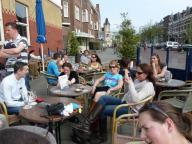
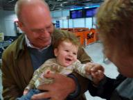
|
|
|
Nederland
» exacte locatie
Het is half elf 's avonds en we zijn nog steeds door de boot aan
het rommelen. Allemaal voorbereidingen voor vertrek, want vannacht om
drie uur vertrekt ons vliegtuig naar Nederland! Jawel, we gaan een
maand op vakantie naar ons thuisland.
Afgelopen vrijdag heb ik mijn laatste werkdag gehad en afscheid van
mijn collega's genomen door samen in een tentje in de stad te lunchen.
Zes maanden werken zijn ineens al weer voorbij. Het weekend zijn we
bezig geweest met slim inpakken van spullen. Siebe is nieuw op de
boot, maar ook een hele lading babybenodigdheden. Dat neemt toch
aardig wat ruimte in en we willen zoveel mogelijk andere, nutteloze
spullen mee naar Nederland nemen.
We vinden het wel erg spannend om na meer dan tweeenenhalf jaar weer
terug te gaan. En de familie staat ook helemaal op zijn kop. Behalve
Ilse's moeder heeft nog niemand Siebe in het echt gezien, dus dat
wordt een groot feest! We logeren bij mijn ouders en het schijnt dat
mijn moeder een complete babykamer heeft ingericht met allerlei
snufjes die we op de boot niet hebben zoals een commode en een box. We
hebben er zin in!
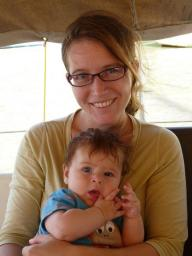
|
|
|
Australische huizen
» exacte locatie
Op onze reis zijn we langs plekken gekomen die wel heel anders
waren dan Nederland. Een wandeling door bijvoorbeeld Cartagena in
Colombia was iedere keer weer een avontuur vol onverwachte
gebeurtenissen. Of Fatu Hiva dat ondanks de Franse invloeden nog
steeds een heel eigen uitstraling heeft. Daarbij vergeleken is
Brisbane een stuk minder spannend en het lijkt in veel opzichten op
ons thuisland. Iets dat hier wel heel anders is zijn de huizen. Af en
toe worden we uitgenodigd door de mensen die we hier hebben leren
kennen en zo hebben we een beetje een beeld gekregen van hoe de
Australier woont.
Het meest opvallende verschil met Nederland is dat bijna ieder huis
hier een vrijstaand huis is. Een vrijstaand huis is in Nederland iets
waar je wel een heel dik salaris voor nodig hebt, maar in Brisbane
lijkt dat voor iedereen bereikbaar. Doordat het klimaat hier zo warm
is, is centrale verwarming iets dat niet bestaat. Veel huizen zijn
hier van hout. Dat geeft weer interessante aandachtspunten bij de
aankoop, want je moet goed onderzoeken of er geen boktorren of
termieten bezig zijn de hele keet af te breken. Doordat huizen van
hout zijn, zijn ze ook relatief licht. Daardoor is het mogelijk om
huizen te verhuizen en er zijn zelfs "showrooms" waar je een
tweedehands huis kan uitzoeken en naar je land laten transporteren.
Het karakteristieke type huis uit deze omgeving wordt de
"Queenslander" genoemd. Dat is een houten huis op palen met vaak een
groot "deck" rondom het huis. Een deck is een soort overdekt dakterras
waar je ruim kan zitten, de kinderen kunnen spelen en waar altijd een
barbecue staat opgesteld (zes branders is het minimum). Alsof dat
allemaal nog niet mooi genoeg is, is er ook nog vaak een zwembad in de
tuin.
Deze week zijn we in twee Queenslanders op bezoek geweest.
Vrijdagavond bij Anne-Marije en David, die beide ook Nederlands zijn,
en zaterdagmiddag bij Anna en David, een stel met toevallig bijna
dezelfde namen die uit Engeland en Zuid-Afrika komen. We zijn het
wonen in de beperkte ruimte van onze boot helemaal gewend, maar
daardoor voelt een huis wel aan als een absurde luxe. En vooral de
huizen die ze hier hebben. We hebben met Siebe in het zwembad
gezwommen, aan een grote houten tafel met stoelen met lekkere kussens
gegeten en drinken met ijsblokjes uit de ijsblokjesmaker gedronken.
Heerlijk. En als je bedenkt dat de middagtemperaturen hier het hele
jaar tussen de 20 en 30 graden zijn en de zon vrijwel altijd schijnt,
dan kan ik me voorstellen dat Australie een interessante plek is om
naartoe te verhuizen voor diegene die niet veel met Nederland
hebben.
Wij behoren echter niet tot die categorie mensen, want er zijn twee
dingen die ze hier niet hebben. Het eerste is onze familie. Als je
hier gaat wonen is het onrealistisch om te verwachten dat je hen meer
dan eens per jaar ziet en waarschijnlijk sla je af en toe ook een jaar
helemaal over. Het tweede is de taal. Ons Engels is serieus verbeterd
sinds we hier zijn, maar het niveau van je moedertaal is nog ver weg
als het niet zelfs onbereikbaar is. Mijn werk heeft aangeboden een
zogenaamd gesponsord werkvisum voor mij aan te vragen waardoor we zo
lang als we willen in Australie zouden kunnen blijven. Een mooie kans,
alleen is het voor ons wel weer leuk geweest met werken en wonen in
het buitenland. Veel geleerd en meegemaakt hier, maar we willen graag
weer verder varen. Ik heb dus vorige week mijn ontslag ingediend en
over drie weken heb ik mijn laatste werkdag. Het plan is om in een
jaar en drie maanden met ons drietjes terug naar Nederland zeilen. We
zijn niet alleen erg benieuwd hoe de tweede helft van de wereld er
vanaf het water uitziet, maar het lijkt ons ook geweldig om al die
tijd samen voor Siebe te kunnen zorgen.
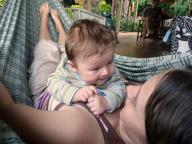
|
|
|
De Duyfken
» exacte locatie
De Duyfken is een klein Nederlands VOC schip. Nou, klein, wel ruim
tien meter langer dan onze boot. In 1606 waren ze op zoek naar meer
specerijen en dachten op Papua Nieuw Guinea aangekomen te zijn. Maar
wat bleek, het was Australie! Daarmee komt uit Nederland het eerste
Europese schip dat Australie op de kaart heeft gezet. Letterlijk, want
ze maakten de eerste kaart van Cape York, in het noordoosten van
Australie.
En nu ligt de Duyfken in Brisbane. Niet de echte maar een replica. Ook
al is ie nep, het is erg indrukwekkend om zo'n schip te zien. In 1606
hadden ze nog geen stuurwiel, dat werd pas honderd jaar later
uitgevonden. Ze stuurden met een rechtopstaande lange helmstok. Voor
hun neus een kompas en een zandloper. Twee keer een half uur en dan
was de volgende aan de beurt. Een wc hadden ze niet, wel een
blokrooster onder de boegspriet dus alle viezigheid verdween meteen in
zee. De replica hebben ze van Cairns naar Brisbane gezeild. Ze haalden
een snelheid van 7 knopen. Verder is ze voorzien van alle moderne
apparatuur zoals een radar en een motor. Maar dat al is goed verstopt.
Ik ben twee keer geweest, een keer met Joost en daarna met de
Duyfkenschool.
De Duyfkenschool geeft een middag in de week les aan kinderen van
Nederlandse ouders. Dit is extra naast hun gewone school om met de
Nederlandse taal en cultuur bezig te zijn. Elke dinsdagmiddag help ik.
De niveauverschillen zijn best groot, de een spreekt het Nederlands
vloeiend terwijl de ander slechts een paar woorden weet. Erg leuk om
weer even juf te zijn! Siebe neem ik 'gewoon' mee. De kinderen vinden
dat erg leuk en het leidt ze gelukkig niet af. Meestal slaapt hij
heerlijk in de buikdrager. Aankomende dinsdag ga ik voor het eerst
zonder Siebe. Joost heeft zijn uren op het werk een beetje mogen
schuiven zodat hij een papamiddagje heeft. We zijn erg benieuwd hoe
dat gaat!
|
|
|
Mum, bub en koffie
» exacte locatie
De officiele bijeenkomsten van de mothergroup zijn voorbij maar we
spreken met alle moeders en babies elke week in een ander cafe af om
koffie te drinken en te kletsen. Het blijft zo leuk om al die babies
bij elkaar te zien! Bij de mum and bub gym zijn we een klasje
doorgeschoven. Een grotere groep en de oefeningen zijn wat pittiger.
Je baby mag nog steeds mee en hier zijn de oudste babies zes maanden,
die zijn echt enorm groot. Na de workout is het uiteraard weer tijd
voor koffie! Soms loop ik naar Joost zijn werk om samen te lunchen
zodat hij Siebe kan knuffelen in z'n middagpauze. Het is zo leuk om te
zien wat Siebe steeds nieuw leert. Hij kan steeds beter zijn hoofd
rechtop houden en vindt het leuk om rechtop te zitten met hulp. Sinds
kort pakt hij echt een knuffeltje vast en schaterlacht. We hebben
zoveel plezier met hem!


|
|
|
Scheepswrakken
» exacte locatie
Dinsdag begint met veel regen en het lijkt er op dat het niet gaat
ophouden. Maar rond een uur of tien wordt de lucht lichter en komt er
een voorzichtig zonnetje te voorschijn. Voor vandaag een kort
zeiltochtje met windkracht vier schuin van achteren. We rollen lekker
lui alleen het voorste zeil uit en zetten koers naar de Tangalooma
Wrecks, een ankerplek waar ze een stuk of zeven oude schepen op een
zandplaat hebben laten zinken. Daarachter kun je beschut ankeren en we
hebben er ook goede snorkelverhalen over gehoord.
Het laatste stuk tussen de zandbanken door wordt gemarkeerd door
bakens op de kant die je in lijn moet houden. Dat is niet echt
makkelijk met een stroming van twee knopen van opzij. Voor je gevoel
stuur je de verkeerde kant op maar we komen goed uit. De zandbanken
zijn goed te zien omdat ze lichter blauw zijn. Net op het moment dat
we bij de wrakken aankomen en we willen bekijken waar we ons anker
kunnen laten vallen wordt Siebe hongerig en moet heel zielig huilen.
Hmmm, niet echt een goede timing want dit moeten we toch echt samen
doen. Siebe is ontroostbaar dus ik trek hem snel wat lange kleertjes
aan tegen de intense zon, zonnehoedje op en hup in de buikdrager. Dat
helpt en we zoeken op ons gemak een mooi plekje uit. De rest van de
middag relaxen we onder de zonnetent. Joost checkt het snorkelen bij
de wrakken maar dat valt tegen. Er zijn wel heel veel vissen maar het
zicht is maar een halve meter. Niet echt een aantrekkelijk plan met
kans op haaien die je niet kunt zien aankomen. Chris heeft trouwens
onze website verbeterd. Als je bovenaan het verhaaltje op de knop
'exacte lokatie' klinkt dat zie je precies waar we geankerd
liggen.
Woensdag staan we om kwart voor vijf op om zolang mogelijk te
profiteren van het meegaande tij. Siebe ligt nog heerlijk te slapen en
als we tussen de zandbanken uit zijn hijsen we alle zeilen en hebben
een mooie tocht terug. Siebe's wipstoeltje knopen we vast aan de
kuipbank zodat hij ook buiten kan zitten. Hij vindt het allemaal wel
prima. Het is zo gezellig ineens met z'n drietjes te zeilen! Onze met
veel moeite bemachtigde plek hebben we bezet gehouden door een oranje
boeitje tussen de palen te laten drijven. We liggen weer maar wat een
heerlijk lang weekend hebben we gehad!
|
|
|
Big Sandhills
» exacte locatie
Maandag halverwege de middag komen we aan bij onze tweede ankerplek
voor Moreton Island. We liggen in de buurt van wat ze de Big Sandhills
noemen en die willen we wel beklimmen. De weg van en naar de kant
blijkt echter ook verrassend interessant te zijn.
Met Siebe in de buikdrager varen we met de bijboot naar de kant. Het
is alleen laag water waardoor we al vast komen te zitten op 500 meter
van het strand. Dat is toch wel een beetje ver, vooral als straks de
hele boel weer onder water staat. Tussen ons en het strand liggen
tientallen zandplaten met geultjes water er tussen. Siebe begint op
dat moment hongerig te worden. Dus zo zit Ilse in de bijboot Siebe te
voeden terwijl ik door het water loop en de bijboot voorttrek in een
poging via de geultjes dichter bij het strand te komen. Af en toe zie
ik een vreemde driehoekige vis wegvluchten voor mijn voeten. Het ziet
er hier prachtig uit vooral nu de zon al laag staat en mooie schaduwen
van de golfjes in het zand creeert. Na een tijdje kunnen we echt niet
meer verder en leggen we de bijboot aan een ankertje op een zandplaat.
Het laatste stuk ligt helemaal boven water. Het stikt er wel van de
krabbetjes die allemaal direct een holletje gaan graven om zich te
verstoppen voor ons.
De klim de zandberg op is steil, maar toch voor Ilse met Siebe goed te
doen. En het uitzicht wordt als maar spectaculairder. Van bovenaf is
dat hele stelsel van platen en geultjes prachtig te zien. Zo'n mooie
plek en er is verder helemaal niemand. Het is voor ons echt genieten
daar. Siebe krijgt nog wat meer drinken en we kijken naar de zon die
langzaam steeds lager komt te staan. Wat we vanaf onze plek ook goed
zien is dat het pad naar de bijboot steeds verder onder water loopt.
De Moreton Bay staat bekend om zijn bull sharks, een haaiesoort die na
de grote witte haai verantwoordelijk is voor de meeste aanvallen op
mensen. Ik zit er niet echt op te wachten om terug te moeten zwemmen
naar de bijboot op dit tijdstip, want haaien jagen vooral rond
zonsopkomst en zonsondergang. We besluiten dus maar weer terug te
gaan.
Gelukkig kunnen we nog makkelijk terug lopen naar de bijboot en komt
het water niet hoger dan onze knieen. Ineens zet ik mijn voet neer en
zie ik een meter verderop ineens een pijlstaartrog wegschieten. Die
had zich ingegraven in het zand en was totaal onzichtbaar. Wat hij
achterlaat is een soort kratertje in het zand met daaraan vast een
geultje waar zijn lange staart heeft gelegen. Vanaf dan ga ik maar
schuifelend door het water, want als je op zo'n dier stapt krult hij
zijn staart omhoog en steekt zijn giftige staartpunt in je been.
Ineens zie ik overal kratertjes van waar roggen hebben gelegen. Ilse
vindt het helemaal niet leuk en loopt achter me aan, haar voeten
precies op de plek zettend waar ik mijn voeten eerst heb gezet.
Onderweg zie ik nog vijf andere roggen wegschieten, maar dan zijn we
weer veilig bij de bijboot. Terug op de boot valt Siebe al vrij gauw
in slaap en kijken wij naar de sterren die we al heel lang niet meer
gezien hebben.

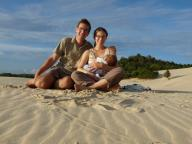
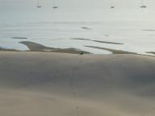
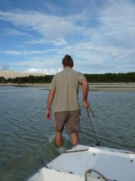
|
|
|
Zeilen met Siebe
» exacte locatie
Ineens liggen we weer op het ruime water voor anker na meer dan zes
maanden stilgelegen te hebben in de stad. We zijn bezig met een tocht
door de Moreton Bay, een baai aan de monding van de Brisbane rivier.
Even een andere omgeving voor een paar dagen, controleren of alles nog
werkt aan boord en natuurlijk vooral om te ervaren hoe het zeilen is
met Siebe erbij.
De hele week hebben we allerlei voorbereidingen getroffen voor
vertrek. Het is ongelofelijk hoe de zeewaardigheid van een boot
achteruitgaat van stilliggen. Zonnepaneel los op het dek, de onderkant
van de bijboot helemaal begroeid met planten en schelpen, een roer dat
half vastzit, allerlei spullen los in de boot, enzovoort, enzovoort.
Het is zaterdagochtend half tien en we zijn daadwerkelijk klaar om te
vertrekken. Het tij begint net uit te lopen en die stroom mee hebben
we wel nodig omdat het een flinke afstand is naar de beoogde
ankerplek. Siebe ligt net even rustig in zijn wieg, Ilse gooit de
laatste lijn voor los en ik geef gas en vaar tussen de palen uit de
rivier op. We staan er allebei versteld van dat we zo met ons hele
hebben en houden weg kunnen varen. Zulke dingen vergeet je een beetje
na zo lang niet varen. Terwijl we de stad achter ons laten probeer ik
nog even snel binnen GSM bereik met Skype naar mijn moeder te bellen.
Het ziet er niet erg traditioneel uit, maar handig is het wel.
Op de rivier heeft Siebe soms honger, soms een schone luier nodig,
soms wil hij geknuffeld worden of vindt hij zijn uitzicht niet
interessant genoeg. Ilse heeft er haar handen vol aan. Ik heb mijn
handen continu aan het roer en er is eigenlijk geen mogelijkheid om er
nog iets anders naast te doen zoals koffie zetten. Het wordt al gauw
duidelijk dat dat soms de praktijk is van varen met een baby. Zo
motorren we in een paar uur de rivier af. Bij de monding krijgen we
ineens steile golven recht op de boeg. De vaargeul is smal en we
hebben geen andere keus dan door elkaar geklutst te worden. Siebe
lijkt er gelukkig geen probleem mee te hebben en hij zwaait rustig mee
in zijn hangwieg.
Na een half uurtje kunnen we dan eindelijk afbuigen en kan het zeil
omhoog. Ineens glijden we weer door het water. De automatische piloot
kan er ook weer op zodat ik mijn handen vrij heb. Het zeilgevoel van
vorig jaar komt bij ons weer helemaal terug. Ik zou bijna vergeten dat
ik eigenlijk een baan in Brisbane heb. Het idee om daar niet meer
terug te gaan en lekker verder te zeilen is helemaal niet gek. Na drie
uur zeilen laten we ons anker vallen achter Peel Island en genieten we
de hele avond van het uitzicht op de zon die ondergaat.
De volgende dag gaan we met ons drieen naar het eiland voor Siebe's
eerste duik in zee! Een gedenkwaardig moment voor onze jonge zeiler.
Het is alleen nog niet helemaal duidelijk wat hij ervan vindt. Hij
begon niet direct te huilen, maar het leek er ook niet op dat hij het
ontzettend leuk vond. We hebben hem maar weer snel aangekleed.
Waterpret, dat komt nog wel als hij wat ouder is.
|
|
|
Autonome Ilse
» exacte locatie
Ik heb mijn vrijheid weer herwonnen! Sinds vorige week kan ik weer
zelf met het bijbootje varen. Erg leuk, kan naar de kant wanneer ik
dat wil of juist bij een andere boot op bezoek. Het gaat een stuk
beter met me en heb haast geen pijn meer. Dinsdag naar de 'mum and bub
gym'. Daar leer ik hoe ik weer mijn buikspieren mag gaan versterken en
het mooie is dat je je baby mee mag nemen. Je doet zelfs oefeningen
waarbij je je baby op je buik legt. Huilt er een baby, dan praat de
trainster gewoon wat harder. Heeft er een baby trek of een schone
luier nodig? Kan gewoon tussendoor, maakt allemaal niet uit. Siebe
vond het vooral leuk om met me mee te dansen op de muziek. Donderdag
naar de 'mothers group'. Hier komen een stuk of twaalf moeders met
hun baby bij elkaar onder begeleiding van een verpleegster. Er wordt van
alles besproken, van borstvoeding tot non-verbale communicatie van de
baby waaraan je kunt zien dat hij moe is. Leuk is dat je een idee
krijgt van wat normaal is voor een baby. En nog leuker vind ik om al
die babies bij elkaar te zien! Wat opvalt is dat Siebe een van de
grotere en alertere babies is. En nu ik toch een beetje aan het
opscheppen ben kan ik het niet laten om te vertellen dat hij 5,1 kilo
weegt (1,5 kilo meer dan geboorte) en 58 cm is. Hij doet het erg goed.
En het is zo'n schatje! We worden sinds kort getrakteerd op de liefste
lachjes!
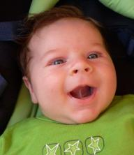
|
|
|
2009
» exacte locatie
Gelukkig nieuwjaar! We hopen dat jullie allemaal een leuk oud en nieuw
gehad! Wij hebben het dit jaar erg rustig aan gedaan. Eigenlijk zijn
we zelfs gaan slapen voor twaalf uur... Ja, zo gaat dat met een baby.
Maar het maakt allemaal niets uit, want met zo'n lief kleintje heb je
helemaal niets extra's nodig. Om twaalf uur zijn we opgestaan voor het
vuurwerk, want we hadden eerste klas uitzicht op de vuurwerkboot die
een paar honderd meter voor onze boeg op de rivier geankerd lag. We
hebben er samen vanaf het voordek van genoten en alle gebeurtenissen
van ons 2008 nog eens besproken. Eindeloos klussen in Nieuw Zeeland,
Ilse die zwanger werd, zeilen met familie, werken in Brisbane en als
hoogtepunt natuurlijk de geboorte van Siebe. Voor ons was het een erg
leuk jaar en we hopen dat 2009 net zo leuk wordt. Volgend oud en nieuw
loopt en praat Siebe misschien al... ongelofelijk. Terwijl we daar op
het voordek zaten lag Siebe nog steeds rustig te slapen. Hij werd pas
om 2.30 wakker na 7,5 uur aaneengesloten slapen, een persoonlijk
record!
|
reageer!
Joost, Ilse en Siebe, 1/1/2009, 02:00
|
Meer babyfoto's
» exacte locatie
Het is even geduld hebben tot er weer spannende verhalen over wind en
golven op de site komen, want het Siebe-thema is voorlopig nog lang
niet uitgeput! We zijn helemaal vol van hem. De dagen sinds zijn
geboorte behoren tot de mooiste van ons leven. Wat het krijgen van een
kindje met je doet kun je je echt niet voorstellen totdat je het
daadwerkelijk zelf meemaakt. En dat gecombineerd met zorgeloos wonen
op de boot, leuke buren, alle gemakken van de stad bij de hand,
flexibele werktijden voor mij en doorlopend zonnige dagen met
temperaturen rond de 30 graden maken dat het voor ons nauwelijks beter
voor te stellen is. Ik word zelfs na drie weken nog steeds vrolijk van
zacht gehuil 's nachts omdat ik Siebe zijn luier mag verschonen. Het
maakt allemaal niet uit. Ilse's moeder is deze week weer vertrokken
naar Nederland en gelukkig gaat het met Ilse nu een heel stuk beter
zodat ze zich nu ook zonder hulp goed kan redden. Ze kan nog niet
alleen het bijbootje besturen, maar er is altijd wel iemand hier die
een lift naar de kant kan geven. Het is af en toe wel een beetje
moeilijk dat we zo ver weg zijn van onze familie. We bellen veel, maar
elkaar in levende lijve zien is natuurlijk veel leuker. Wat het wel
beter maakt is dat we Siebe kunnen laten zien via de webcam. Alleen
zijn we wel een beetje bezorgd dat Siebe straks denkt dat dat
webcamoog 'oma' is.
|
|
|
Siebe op Hafskip
» exacte locatie
Afgelopen donderdag zijn we met Siebe in de buikdrager met de bus
terug naar de boot gegaan.
Ik met de buikdrager omdat ik niet meer mag tillen dan Siebe en Joost
volgepakt met 5 tassen
om z'n nek. Joost had voor mij de bovenste zeereling losgezet zodat ik
makkelijker de boot
op kon en dat ging gelukkig heel goed. Eenmaal binnen vonden we de
boot ineens heel klein.
Maar dat is ook niet gek na een paar dagen bij Henriette in een groot
huis te hebben
gelogeerd. 's Avonds waren we alweer gewend en heeft Siebe voor het
eerst in de hangwieg
geslapen. Het is zo'n heerlijk schatje! Vrijdag is mijn moeder
aangekomen met het vliegtuig,
die voelde de omakriebels opborrelen en heeft meteen geboekt! Vooral
ook om ons op de boot
te helpen zodat ik goed kan herstellen van m'n keizersnede, erg fijn.
Ik voel me al een stuk
beter en de pijn is al heel wat minder. Zelf met het bijbootje varen
lukt nog niet maar we
hebben veel buren die ons wel een lift naar de kant willen geven.
Ondertussen genieten we
volop van Siebe. 's Ochtends is hij op z'n wakkerst en zitten Joost en
ik samen met Siebe in
de kuip te spelen. Als Joost naar z'n werk gaat haalt hij m'n moeder
op van de kant. 's
Avonds na het eten brengt hij haar weer terug en gaan we tegelijk met
Siebe naar bed. 's
Nachts wordt hij 2 tot 3 keer wakker om te drinken. Dat zijn wel
speciale momenten. Wij half
slaperig en dan ons kindje dat zo'n trek heeft dat Joost gauw z'n
luier moet verschonen
zodat hij snel bij mij kan komen drinken. Daarna valt hij weer
helemaal tevreden in slaap.
Elke keer dat ik naar hem kijk voel ik me zo gelukkig! En we hebben
heel veel mailtjes,
kaartjes en kadootjes ontvangen van iedereen! Heel erg bedankt daarvoor!
|
|
|
Babyfotos
» exacte locatie
Siebe is nu zes dagen oud en sinds gisteren zijn we niet meer in het
ziekenhuis. Terug naar de boot zagen we nog even niet zitten en we
waren heel blij toen Henriette, een Nederlandse die hier woont,
aanbood dat we bij haar konden blijven. Wel spannend om ineens de
veilige ziekenhuisomgeving te verlaten en er alleen voor te staan.
Maar het gaat allemaal heel goed. Siebe slaapt goed en drinkt goed.
Afgelopen nacht zijn we erom 0.00 en 4.00 uitgeweest en toen we om
7.30 wakker werden sliep hij nog. En het is zo leuk met ons kleintje.
Midden in de nacht worden we ineens wakker van zachte smakgeluidjes
naast ons in de wieg. Mooier kan het toch niet. Werken doe ik deze
week niet en het voelt echt als vakantie. Met Ilse gaat het nu een
stuk beter dan een paar dagen geleden en we verwachten donderdag al
weer terug te gaan naar de boot. Het voelt wel heel luxieus om in een
huis te wonen hoor. Zoveel ruimte en zoveel gemakken. Het is vanavond
weer een heerlijk warme avond en we zitten nu buiten op de veranda. Te
wachten tot Siebe wakker wordt en gevoed wil worden.
|
|
|
De baby is er!
» exacte locatie
Eindelijk is het dan zover! Onze baby is er! Het was allemaal heel
spannend met een dag vol weeen die totaal onverwacht eindigde in een
nood-keizersnede. Na twee jaar zelfvoorzienend rondzeilen lag de
gezondheid van Ilse en de baby ineens volledig in handen van de artsen
hier. Het gaat allemaal zo snel. Ineens staat de kamer helemaal vol
met mensen die bewakingsapparatuur aansluiten, infuus aanbrengen,
bloed van de baby testen, Ilse snel door de gangen naar de
operatiekamer rijden, verdoven en voor we het wisten was de baby eruit
en lag hij bij ons. Ik krijg bijna tranen in mijn ogen als ik me
opnieuw realiseer hoeveel dit voor ons heeft betekent. Wat een beroep
hebben deze mensen. Dat is nog eens wat anders dan dat spelen met
computers dat ik op mijn werk doe. Gelukkig is het allemaal goed
afgelopen en zijn we nu blije ouders van onze nieuwgeboren zoon Siebe
(3620 gram, 54 cm)! Hij is ondertussen vier dagen oud en het gaat
allemaal voorspoedig. Drinkt goed uit de borst en doet alles zoals het
hoort. Ilse is langzaam aan het herstellen, maar het is toch wel erg
pijnlijk zo'n operatie. De komende weken vergen waarschijnlijk wel wat
improvisatie wat betreft het wonen op de boot. Maar we zijn zo blij
met ons kindje. Het is echt fantastisch.
|
reageer!
Ilse en Joost, 30/11/2008, 07:00
|
Stormen
» exacte locatie
Ten eerste: nee, de baby is er nog niet. Dus voordat alle
babyverhaaltjes op de site gaan komen is hier nog even een verhaaltje
over een ander onderwerp: onweersstormen in Brisbane. Brisbane staat
erom bekend, maar de afgelopen week was het wel heel erg met drie
extreme stormen. Daken zijn van huizen gewaaid, huizen overstroomd,
bomen omgewaaid, auto's en tunnels volgelopen en hagelstenen ter
grootte van golfballen. Op de boot hebben we vooral te maken gehad met
heel veel regen. Zoveel zelfs dat sommige bijbootjes hier gezonken
zijn. Wij hebben ons bijbootje netjes elke dag leeggehoosd en dat was
maar goed ook. Op de foto is te zien hoeveel water de bijboot in een
nacht had verzameld. Verder was er erg veel spectaculair onweer. Nadat
de regen opgehouden was hebben we verbijsterd op het voordek naar het
wegtrekkende onweer gekeken. Zoveel flitsen, zie filmpje. De volgende
dag was het water van de rivier helemaal bruin en lag het vol met
planten en takken die met eb en vloed steeds heen en weer stromen.
Alsof we op een junglerivier liggen. Nu, drie dagen later, is het nog
steeds niet weg en zijn de veerboten allemaal buiten bedrijf. Het weer
leeft hier behoorlijk omdat het zo'n invloed op het leven van mensen
heeft. De hele week waren er verschillende mensen niet op het werk
omdat ze grote problemen thuis hadden met de gevolgen van de stormen.
Via internet is precies te volgen wat de verwachte paden van de
stormen zijn, zie kaartje. Maar nu is het weer rustig, dus geen
excuses meer voor baby's die eventueel geboren willen worden!

|
reageer!
Ilse en Joost, 23/11/2008, 10:00
|
No, not yet!
» exacte locatie
Is de baby er al? Ik zag jullie bijbootje gisteravond niet bij de boot liggen dus we dachten al dat het zover was! Onze buren leven behoorlijk met ons mee maar we moeten ze steeds met 'no, not yet!' beantwoorden. Ook op Joost z'n werk kijken ze 'm elke morgen argwanend aan... "Ben je er nou alweer?" En als iemand me vraagt wanneer ik ben uitgerekend kijken ze me verbaasd aan als ik zeg dat dat afgelopen dinsdag was. Ik stap nog net zo makkelijk het bijbootje in en uit. Vrienden en familie hebben
hun mobiel standby. En ja, het is spannend maar ik vind het niet zo spannend als onze eerste grote oversteek op de Atlantische Oceaan. Toen moesten we het helemaal alleen doen terwijl ik hier omringd ben door de goede zorgen van het birth centre. En de afgelopen maanden heb ik echt alles gelezen wat ik maar kon vinden in zowel het Nederlands als in het Engels dus ik voel me goed voorbereid. Het is meer dat ik met de dag steeds nieuwsgieriger word naar ons kindje. We zijn zo ontzettend benieuwd! We
zijn er helemaal klaar voor, kom maar baby!
|
|
|
Cricket
» exacte locatie
Dit weekend hebben we aardig wat Australische dingen gedaan. Zaterdag
ben ik wezen surfen met Jan (een van onze Nederlandse niet zeilende
vrienden). Dat was erg leuk. Ik had het in Portugal al eens geprobeerd
maar toen waren de golven zo hoog dat het echt nergens op leek. Nu was
het een stuk beter. Staan op de plank was er uiteraard nog niet bij,
maar liggend is het ook best spectaculair. En de altijd aanwezige
dreiging van haaien maakt het nog iets spannender. Ze patrouilleren hier
zelfs met helicopters
om haaien vroegtijdig aan te zien komen en op sommige plaatsen hebben ze
haaiennetten rond het strand. Maar het daadwerkelijk risico is toch heel
beperkt, zegt men. Daarna zijn we naar een BYO verjaardagsfeestje
geweest. BYO staat voor Bring Your Own en dat betekent dat je je eigen
(bbq) eten en drinken moet meenemen. In Nederland zou je raar aangekeken
worden als je je verjaardag viert, maar dat de gasten wel zelf alles mee
moeten nemen inclusief kado. Hier is dat heel normaal. Ik ben er nog niet
uit wat ik er nou van vind, maar het maakt feestjes organiseren wel heel
makkelijk waardoor er meer feestjes zijn. De volgende dag zijn we naar
het cricketstadion geweest, want ik had via mijn werk gratis kaartjes
gekregen voor een cricketwedstrijd. Vooraf had ik de spelregels op
internet bestudeerd, want we wisten er helemaal niets van. Op het werk
was men totaal verbaasd dat ik niet eens wist wat de "wicket" is. Nee,
nooit van gehoord. Tijdens de wedstrijd zaten we naast een wat ouder
paar dat
ons nog verdere uitleg gaf over het spel. Het is interessant, maar
volgens mij vooral als je het speelt. Als toeschouwer ziet het er
namelijk nogal sloom uit. En de wedstrijd duurde maar liefst van 10.15
tot 17.45! Dat was trouwens een korte wedstrijd. Andere vormen duren
vijf dagen. Voor ons was het halverwege de dag wel genoeg en zijn we
maar weer terug gegaan naar de boot. Leuk om eens gezien te hebben, maar
voor de volgende keer zou ik liever iets als Australian Rules football
proberen. Als laatste
nog even de foto van de zandloper. Er zijn hier ernstige watertekorten
waardoor de hoeveelheid water per huishouden gelimiteerd is tot iets van
150-200 liter per dag. Wij op de boot zouden er met geen mogelijkheid
aan kunnen komen, maar als je een huis hebt met vaatwasser, bad,
tuinsproeiinstallatie, etc dan moet je wel opletten. Vandaar ook de
zandloper met zuignap. Deze plak je in de douche en zo kun je vier
minuten douchetijd afpassen. Ik vond het wel leuk dat zo'n oude
uitvinding ineens een nieuw
leven krijgt omdat het zo goed waterdicht is. Een elektronische of
mechanische wekker is natuurlijk zo kapot.
|
|
|
Babykamer klaar!
» exacte locatie
Zo op de boot heb je eigenlijk niet veel nodig voor de baby. Een extra
kamer hebben we niet. Dus die hoeven we ook niet in te richten en te
verven in kleuren die zowel leuk zijn voor een jongetje als een meisje.
Een bedje is wel zo handig en bij Dingo sliep hun kindje in een
hangwiegje. Die hebben wij nu ook en afgelopen weekend heeft Joost een
paar stevige ogen gekocht om 'm op te hangen. Het mooie is dat er de
hele dag veerboten langs varen waardoor we de hele tijd een beetje
blijven wiebelen.
Het wiegje wiebelt mee en kan straks mooi de baby in slaap wiegen. Het
handige van een hangwieg is dat ie net als het cardanische kooktoestel
altijd rechtop blijft en bij scheef zeilen de baby niet de hele tijd
heen en weer rolt. Vanaf vandaag mag de baby geboren worden zonder dat
'ie de couveuse in hoeft. Maar beter is als ons kindje nog even blijft
zitten. Hij of zij beweegt lekker veel en ik voel me goed alleen doe ik
wat minder op een dag. Slapen wordt ook steeds lastiger met zo'n dikke buik!
Gister werd ik 's nachts zelfs wakker omdat ik zo'n trek had dat ik maar
even wat ben gaan eten. In het ziekenhuis zijn we trouwens alsnog
ingeloot voor het birth centre. Dat houdt in een privekamer die er
huiselijk uitziet met een dubbel bed en een bad. En slechts twee
midwifes (verloskundigen) waar ik de komende weken om de beurt afspraken
mee heb en waarvan er eentje bij de bevalling is. En na de bevalling
mogen we met z'n drietjes nog een hele dag blijven en leren de midwifes
ons de belangrijkste babydingen zoals een luier verschonen. We zijn
reuzebenieuwd naar ons kindje, duurt nu echt niet lang meer!

|
|
|
Ons leven weer op de rails
» exacte locatie
Na anderhalve week werken kan ik zeggen dat de problemen met software
nog steeds hetzelfde zijn en een kantoor van binnen ook niet is
veranderd. Niet veel aan gemist dus de afgelopen twee jaar. Behalve
dan dat ik de keuken op kantoor nu heel luxieus vind. Voor mijn
collega's is er niets bijzonders aan, maar voor mij na meer dan twee
jaar op de boot is het geweldig om een koelkast te hebben voor mijn
kaas, stromend water, direct kokend water, broodrooster, tostimaker en
espressomachine die zelf bonen maalt. Dat er om me heen niemand is die
Nederlands kan en dat ik in vergaderingen zit waar Engels gepraat
wordt inclusief snelle grapjes en lokale uitdrukkingen is wel erg
interessant. Ik kan nog steeds niet helemaal geloven dat het
daadwerkelijk gelukt is om daartussen te belanden. Ze doen ook wel
vreemde dingen trouwens. Er was iemand jarig en ze hadden niet alleen
taart, maar ook toastjes met brie om half elf 's ochtends. Aparte
smaak vond ik als enige. Verder is het heel mysterieus wat men in de
pauze doet. Niemand zegt er veel over en het lijkt niet echt de
bedoeling om gezellig samen te gaan lunchen zoals in Nederland
gebruikelijk is. Een van mijn doelstellingen is wel om daar iets aan
te veranderen. Maar ons leven hier is wel tot rust gekomen nu ik een
baan heb. Geen zorgen meer over het naderend nulpunt van onze
bankrekening en volledige aandacht voor de volgende stap in ons plan:
de baby! Afgelopen zaterdag zijn we voor de tweede keer naar de
antenatal classes (zwangerschapscursus) in het ziekenhuis geweest. Dat
doen ze echt heel goed hier en we denken er nu toch wel heel wat vanaf
te weten. Op de foto zit ik als vrijwilliger met een bekken en een
babypop op schoot en laat de midwife (verloskundige) aan de klas zien
wat we kunnen verwachten van de verschillende fases van de bevalling.
De volgende dag hebben Jan en Jeanette, een andere Nederlands stel,
ons meegenomen naar de Glass House Mountains ten noorden van Brisbane.
Het zag er daar allemaal erg mooi en groen uit, heel anders dan de
directe omgeving van Brisbane. We hebben wat gewandeld, ergens in een
tentje geluncht en 's avonds bij hen thuis gezellig gebarbecued. Tot
slot nog een luchtfoto van onze huidige ligplaats, we krijgen er maar
geen genoeg van!
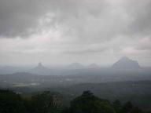
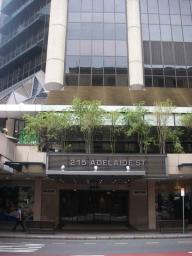
|
|
|
Drie aanbiedingen
» exacte locatie
Bijna twee maanden lang heb ik van alles geprobeerd om aan een baan te komen zonder enig resultaat. Maar deze week was alles anders. Het ene na het andere gesprek en vanmiddag had ik ineens maar liefst drie aanbiedingen voor me liggen! Eentje sprong er duidelijk uit en ik heb net gebeld om te zeggen dat ik die accepteer. Al onze zorgen zijn dus in een klap opgelost. Waarschijnlijk kan ik eind volgende week al beginnen. Het is een professioneel IT bedrijf met een ontspannen cultuur en iedereen met
wie ik in de drie sollicitatiesrondes heb gesproken komt erg vriendelijk over. En ze zitten nog midden in het centrum ook, in een van die wolkenkrabbers op tien minuten loopafstand. Veel beter kan ik het me niet voorstellen. We hebben een risico genomen door ons plan afhankelijk te maken van het al dan niet werk vinden in Australie en we zijn erg blij dat dat nu een interessante uitkomst heeft opgeleverd. Het fruit plukken-noodplan kan dus de prullenbak in.
|
|
|
Kangoeroes en koala s
» exacte locatie
Via de Nederlandse jongerenborrel leren we veel leuke mensen kennen hier
in Brisbane. Een stel daarvan, Anne Marije en David, woont in Redcliffe
en nodigde ons uit om een weekend langs te komen. Redcliffe ligt ten
noorden van Brisbane aan de Moreton Bay. Ze hebben er voor ons een echt
Aussie weekend van weten te maken! We zijn al bijna drie maanden in
Australie maar hadden nog geen kangoeroe gezien. David en Anne Marije
weten die wel te vinden. Met hun 4WD nemen ze ons mee naar een bos bij
hen in
de buurt. Aangezien we ook kans hebben op het spotten van koala's
bestuderen we alle eucalyptusbomen goed. Het enige dat koala's doen is
hangen in deze bomen en de blaadjes eten. Biologen hebben ontdekt dat ze
de enige dieren zijn die zo weinig hersens hebben dat ze als een
walnootje rondzweven in hun verder lege hoofd. Eucalyptusblaadjes zijn
giftig en waarschijnlijk kost het de koala's zoveel energie om het gif
uit de blaadjes te halen en ze te verteren dat er weinig energie meer
overblijft voor
het functioneren van hun hersenen. Na een tijdje zoeken heeft Anne
Marije er een gevonden! Heel hoog in de boom en na studie met
verrekijkers blijkt zelfs dat ze een baby bij zich draagt. Erg leuk! We
lopen een stukje verder door het bos en ineens zien we twee kangoeroes
staan. Ze zijn groter dan ik had gedacht. Om ze niet te laten schrikken
lopen we een stukje om en blijkt het een hele groep te zijn! Echt super!
De meesten staan op hun achterpoten ons uitgebreid te bekijken terwijl
de rest lekker
aan het eten is. Tja, wie bekijkt er nou wie? Heel voorzichtig proberen
we dichterbij te komen maar opeens vinden ze het te dichtbij en springen
weg, naar een plekje verderop. Dat springen doen ze rechtop, ze
gebruiken alleen hun achterpoten en staart om mee af te zetten. Na nog
een tijdje kijken naar deze grappige dieren rijden we naar het huis van
Anne Marije en David. Ze wonen in een rustige wijk met alleen losstaande
huizen en elk huis heeft een groot stuk gras om zich heen. Dit is heel
normaal
in Australie. We hebben heerlijk buiten gegeten met worstjes van de zes
brander (!) BBQ aan een tafel met stoelen met kussens en geslapen in een
echt bed. Verder zijn we zelfs zoals echte Australiers dat graag doen
met de 4WD over het strand van Bribie Island gereden. Al met al een erg
geslaagd weekend, thanks!
|
|
|
Werk zoeken
» exacte locatie
"To be truly challenging, a voyage, like a life, must rest on a firm foundation of financial unrest", las ik deze week in het boek Wanderer van Sterling Hayden. Een uitspraak die voor ons langzamerhand steeds meer betekenis krijgt. De verlenging van onze reis was vooraf niet begroot en we zijn nu op het punt aangekomen dat we met het geld dat we nog hebben Nederland zeker niet meer kunnen bereiken. Laat staan dat we enige reserve hebben voor onverwachte grote uitgaven. Het vinden van werk hier in
Australie heeft op dit moment dus absolute topprioriteit. Eenvoudig en matig betaald werk is er wel, maar om het plaatje financieel rond te krijgen moet ik toch echt iets in mijn vak (IT) vinden. En dat valt niet mee. Ik ben nu een dikke maand bezig en heb op een stuk of dertig vacatures gereageerd. Dit leidde slechts tot twee gesprekken. Het gesprek bij het eerste bedrijf is niets geworden en of die tweede een vervolg krijgt hoor ik deze week. Knelpunten zijn het beperkte werkvisum dat ik heb, twee
jaar niet gewerkt en nog een buitenlander ook. Taal is natuurlijk ook een beetje een hindernis. Ondertussen spreek ik best aardig Engels, maar je merkt toch dat je aan de telefoon en in gesprekken jezelf niet zo goed kan presenteren als in het Nederlands. Er wordt vaak gesproken over de moeilijkheden die buitenlanders in Nederland hebben om aan werk te komen en het is interessant om dat nu zelf eens als buitenlander te ervaren. Ik blijf ermee aan de gang en hoop dat er snel iets gebeurt. Ander kort
nieuws: we zijn weer verhuisd en liggen nu helemaal vooraan de rij palen. Een echt eerste klas plek met vrij uitzicht over de rivier en de skyline van Brisbane en we hoeven nu nog maar vijftig meter met het bijbootje naar de kant. Ideaal als we voor de bevalling naar het ziekenhuis gaan. Verder ben ik met Steen (uit Denemarken) van Radiance een bierbrouwproject begonnen, helemaal in de stijl van de werkloze.
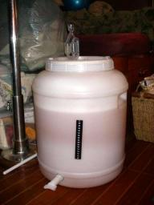
|
|
|
Dutch Club
» exacte locatie
Bij toeval zijn we bij de Dutch Club terecht gekomen. Het is eigenlijk precies wat je denkt dat het is: een club voor Nederlanders in Australie. Afgelopen donderdag hebben we met een deel van de "leden" kennisgemaakt op de maandelijkse borrel in een Belgisch cafe vlak bij ons in de buurt. Er is schijnbaar geen Nederlands cafe hier. Het was erg interessant en gezellig, vooral omdat iedereen ongeveer van onze leeftijd was en ongeveer in dezelfde situatie zit. Onderwerpen als Australische cultuur, problemen
met werk zoeken en bevallen in Australie waren goede gespreksstof. Leuk ook om te horen wat iedereen voor persoonlijk verhaal heeft: waarom, hoe lang, waar, wat voor werk, etc. We werden ook op de hoogte gebracht van het Holland Festival. Dat werd dit weekend georganiseerd door de andere Dutch Club. Zelfde clubidee, maar dan met een gemiddelde leeftijd van zeventig. Het was nogal ver buiten de stad, maar gelukkig konden we een lift krijgen en hoefden we dit spektakel niet te missen. Het deed nog
het meest denken aan een kleine braderie met stalletjes waar je bijvoorbeeld een pot groene bonen van Hak kon kopen. Verder was het Nederlands gevoel duidelijk aanwezig in de vorm van prins carnaval, de kleuren rood - wit - blauw - oranje en het Wilhelmus dat gezongen werd. Maar het hoogtepunt voor ons waren toch de bitterballen en frikandel speciaal die te krijgen waren. Een Nederlander die rechtstreeks uit Nederland zou komen voor het Holland Festival had het waarschijnlijk niet langer dan twee
minuten uitgehouden, maar wij vonden het leuk!
|
|
|
Vaste woonplaats!
» exacte locatie
Goed nieuws, we hebben onze eigen palen! Gelukt dankzij ons briefje, juist omdat het een paar keer was weggehaald. Op een avond kwam er iemand langs die zijn boot hier te koop had liggen en zei "Wat raar dat iemand jullie briefje weg haalt, jullie moeten niet denken dat alle Aussies zo zijn". De deal met zijn boot was bijna rond en dan konden we zijn palen krijgen, erg mooi! Dinsdagochtend kregen we te horen dat de boot definitief verkocht was. Een betere timing kon niet. Noorderzon, de Nederlandse
boot wiens plek we tijdelijk mochten gebruiken, kondigde voor dinsdag hun komst aan. Hun aankomst hadden ze al een paar keer uitgesteld en het was best spannend of we op tijd onze eigen palen zouden krijgen. Zin in ankeren op de rivier hadden we niet omdat er al een paar boten achter hun anker waren gaan krabben. We lagen nog geen vijf minuten op onze eigen woonplek en toen kwam Noorderzon er aan. Joost heeft ze geholpen met vastmaken en toen hebben we een koffietje bij ze gedronken. Voor mij natuurlijk
thee ;-). Leuk om ze weer te zien.
Gisteren zijn we voor het eerst naar het ziekenhuis geweest waar ik de baby op de wereld zal gaan zetten. Ik zit in een systeem met een vaste groep verloskundigen die zowel de controles als de bevalling doen. Kans is groot dat ik de verloskundige ken die ik bij de bevalling krijg. Dit ziekenhuis staat voor een natuurlijke manier van bevallen en dat spreekt mij wel aan. Dit is bijzonder in Austalie omdat veel bevallingen alleen door dokters worden gedaan. Sommigen beweren dat daar het hoge percentage
van keizersnedes uit voort komt, een op de drie baby's wordt via een keizersnede geboren. Met de baby gaat alles goed. Hij of zij is lekker veel aan het bewegen, m'n buik golft er soms helemaal van. Nog een week of tien en dan zien we eindelijk ons kindje, we zijn zo benieuwd!
|
|
|
Politiek tussen de palen
» exacte locatie
Brisbane is vriendelijker voor boten dan de meeste andere grote steden. Normaal wordt er een enorme jachthaven op kilometers afstand van het centrum gebouwd, waar je zij-aan-zij als op een parkeerplaats voor een paar honderd euro per maand mag liggen. Dat hebben ze hier natuurlijk ook, maar er zijn ook zogenaamde pile-moorings. Je krijgt dan twee palen waar je je boot tussen mag leggen plus een steigertje waar je met de bijbootje heen kan varen en gebruik van douches en wasmachines. Het mooie alleen
van deze pile-moorings is dat ze echt absoluut midden in het centrum liggen, aan de voet van de wolkenkrabbers, en dat je maar honderd euro per maand betaalt. Je zou het bijna een sociale voorziening kunnen noemen, want de marktwaarde van deze plekken moet wel meer dan het dubbele zijn. De bevolking van de ongeveer veertig palen varieert enorm. Aan de onderkant bevinden zich de zwervers. Zij hebben typisch boten die nog maar net blijven drijven met overal klodders plamuur, zonnedakjes van oude takken
en opblaasbijbootjes uit de speelgoedwinkel. Sommigen weten extra inkomen te genereren door ergens een tweede of derde gare boot op de kop te tikken. Deze wordt dan voor anker gelegd vlak bij de pile moorings en verhuurt als "centrumwoning" voor collega-zwervers. Om het geheel compleet te maken wordt er nog even een illegale douchesleutel geritseld. Deze huurbaasjes zijn ook in de race voor een vaste paal, want zo nu en dan krabt een anker van een van de verhuurboten wel eens en dat geeft weer zoveel
gedoe. Het andere uiterste zijn de serieus werkenden. Naast ons woont een advocaat en achter ons ligt een business analist. Die stappen s ochtends in pak de bijboot in en lopen daarna zo een van de wolkenkrabbers in om aan het werk te gaan. Verder is er nog een figuur die alles hier graag in de gaten houdt. Wie er aankomt, weggaat en de laatste nieuwtjes tussen palen. Bijnaam "de Burgermeester". Laatst had de burgermeester een van de illegale douchesleutelbezitters aangesproken. De hoeveelheid warm
water is maar beperkt elke dag en het kon toch niet zijn dat eerlijk betalende sleutelbezitters een koude douche hadden omdat zon zwerver er een half uur onder had gestaan. Die aktie escaleerde uiteindelijk tot de huurbaas de burgemeester een vuistslag gaf en de politie werd gebeld. Al met al een erg interessante buurt. Maar goed, het is ondertussen wel duidelijk dat de palen erg in trek zijn. Als er een wachtlijst was geweest dan zou half Brisbane er waarschijnlijk op staan. Daarom is er geen wachtlijst.
Het motto is "first come, first served", wat betekent dat je zo gauw als er iemand vertrekt je direct zijn plek moet inpikken. En veel verloop is er niet. Misschien dat er elke drie weken iemand vertrekt. Wij liggen op dit moment wel aan een paal, maar het is niet de onze. Tijdelijk geleend van een andere boot die we toevallig kenden en die binnenkort terugkomt. Wij zijn dus ook in de race om een eigen paal. Waar dat in de praktijk op neer komt is of heel goed opletten of heel goed netwerken. De
zwervers zijn natuurlijk werkeloos en hebben de hele dag de tijd om een lege plek in te pikken. We hadden dus al gauw door dat we moeten zorgen dat we zoveel mogelijk mensen kennen om al voordat iemand vertrekt te kunnen regelen dat wij die plek kunnen krijgen. Ondertussen is dat al aardig gelukt. We kennen nu best wat boten en hebben ook via een briefje op het prikbord een oproep om een paal gedaan. Dat briefje is overigens al twee keer weggehaald door de competitie. Maar gelukkig zijn er nu drie
boten die ergens in september willen vertrekken en ze hebben alle drie toegezegd dat wij hun plek mogen hebben. Nog even geduld, maar het lijkt erop dat we ruim voordat de baby wordt geboren een vaste woonplaats hebben. Misschien dat we, als het niet lukt om werk te vinden, een carriere als paaldealer moeten overwegen.
|
|
|
Missie Brisbane
» exacte locatie
Er staat een zuidoostenwind van 4-5Bft dus we besluiten een dagje te blijven liggen in het Fitzroyreef. We kunnen wel tegen de wind gaan opkruisen maar daarin is onze boot niet zo goed en is ook niet leuk, dat gestamp tegen de golven in. Voor de volgende dag is er geen wind voorspeld dus dat is mooi voor onze missie Brisbane, kunnen we weer een nachtje op de motor. Jessie vindt het allemaal prima, die wil het liefst meezeilen naar Brisbane zodat ze onze nieuwe woonplaats vast kan zien. Onderweg naar
de Great Sandy Street komen we meerdere walvissen tegen! Zo mooi! Op een afstandje zien we ze zwemmen en zelfs uit het water duiken en met een grote plons weer terechtkomen. Ze geven prachtshows weg! De walvissen zijn op weg naar de Hervey Bay, een baai tussen Fraser Island en het vaste land. Daar voedt moeder walvis haar kleintje dagelijks met 600 liter melk om een goede vetlaag te creeeren voor het verblijf op de zuidpool. Aan het eind van de Hervey Bay begint de Great Sandy Street, een binnendoorroute
weer terug naar zee. Bij 'great' denk ik aan een makkelijke, brede, betonde route maar dat was het dus niet. Betond wel, maar de tonnen staan heel ver van elkaar vandaan en de vaargeul is smal. Het mooie is dat als je begint met opkomend tij je stroom mee hebt tot halverwege en hoog water op het ondiepste stuk. Daar draait het tij en met stroom mee vaar je de geul ook weer uit. We hebben geluk, hoog water is om een uur 's middags dus kunnen we het mooi in een dag doen. Om zes uur 's ochtends varen
we uit en we beginnen natuurlijk niet met omvaren. In plaats van om de eerste zandbank heen te varen, nemen we een afsnijroute. Ik houd de dieptemeter goed in de gaten en zie steeds maar 20-40 cm onder de boot. Hmmm, misschien toch niet zo'n goed plan. We besluiten terug te gaan en toch om de zandbank heen te varen en ineens... voelen we de boot over het zand schrapen en liggen we vast. Hmmmm, dik balen. We zien dat we echt op het randje van de bank zitten en proberen vanalles om de boot scheef te
trekken. Aan de giek hangen, zeil hijsen, tegelijk met de motor op volle kracht voor en achteruit. Het helpt allemaal niet. Wel krijgen we de boot gedraaid op de plek. Het is opkomend tij dus los komen we wel maar de vraag is wanneer en hebben we dan nog genoeg tijd voor de zandstraat? Af en toe komt er een toeristenboot langs denderen (die gaan walvissen kijken) en die trekken aardig lompe golven. Uiteindelijk komen we los door daar gebruik van te maken en alle tactieken tegelijk in te zetten. Pffff,
gelukt! We hebben 1,5 uur op de zandbank gelegen en hebben net genoeg tijd voor de zandstraat. De hele weg letten we extra goed op en we zijn dan ook erg blij als we aan het eind ons anker uitgooien langs een prachtstrandje. BBQ aan, mooi allemaal weer. De volgende dag begint op de motor maar uiteindelijk kunnen we de hele nacht doorzeilen om in de ochtend Brisbane binnen te varen. Missie geslaagd ;-)!
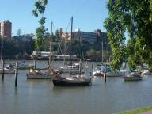
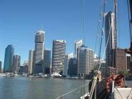
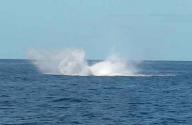
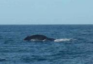
|
|
|
Held op sokken
» exacte locatie
Na een goed geplande tocht en nog fabuleuzer uitgevoerd, kwamen we aan in Fitroyreef. Volgens de Lonely Planet "perfect snorkelling, most beatifull fish and incredible colorfull coral". Na 2 nachtknallers (een term, onstaan door onze bijna onmogelijke missie Brisbane te bereiken in nog geen twee weken) maakten we ons klaar voor mijn eerste snorkeltrip vanaf eigen boot. Ik als befaamde duiker, weet als geen ander wat mooi duikwater is en was al zeer onder de indruk van de kleur en helderheid van het
zeewater. Mijn eigen snorkelset had ik meegenomen, een wetuite kon ik lenen van Ilse, want die paste er, gelukkig voor mij, niet meer in met haar buik. Gesetteld en al, zat ik klaar in het bijbootje om de mooiste stukken koraal te gaan spotten. Als extra attribuut werd mij de speargun aangereikt. Het was tenlotte al weer 5 dagen geleden dat we bij een supermarkt geweest waren en een verse vis zou prima smaken nu we voor anker lagen. Joost had mij al wel ingelicht over het spearvissen en dat er tot
nu nog niets mee gevangen was. Aan mij de eer dus. De wind was guur, de zon fel. Ons plan was om eerst met m'n hoofd vanuit het bijbootje in het water te hangen om te checken of we bij de juiste koraaltafel waren, zals in de LP vermeld stond. Koraaltafel 1, bleek alleen rotsen, geen vis. Koraaltafel 2, rotsen met wat zeewier en 1 kleine vis. We besloten naar onze buurboot te varen en hen te vragen waar nu het koraal was, waar al die toeristenboten op af komen (die er overigens nu nog niet waren).
Aan de rand van het atol ligt schitterend koraal en lots of fish! Dit is klare taal. Met snorkelset en speargun spring ik het water in. Ik steek mijn hoofd door het wateroppervlak en zie vis. Niet overdreven veel, maar in iedere duikbrilview toch zeker 2. De speargun, groter dan een gemiddeld fazantengeweer, was al op spanning gebracht. Het enig wat me te doen stond was de trekker overhalen op ongeveer een halve meter afstand van het slachtoffer, ons avondmaal. Met flipper aan kan je hard zwemmen,
maar bleek al snel geen geschikte methode. Vissen zwemmen harder. Ik laat me meedrijven op de zoute zee, stuur af en toe bij en houd de speargun continu in de aanslag. Mijn eerste kandidaatslachtoffer krijg ik in mijn vizier. Een vis van ongeveer 25 centimeter lang, gestreept in de kleuren zwart, geel en blauw. Een schitterend exemplaar, de juiste grootte. Ik volg deze zebravis, duik de hoek om bij het volgende bosje koraal, zie zijn vloeiende voortbeweging door het water, frons mijn wenkbrauwen
en aarzel. Deze vis was te mooi, deze vis verdiende het om te blijven leven en bij een aarzeling zou ik toch niet raak schieten, moest de gun opnieuw gespannen worden en zou een volgende vissenjager mijn resultaat kunnen overtreffen door met slechts 1 schot een vis te vangen. Op naar een nieuw slachtoffer. Boven een bosje hard koraal, niet kleurrijk, hingen in dezelfde kleur een aantal vissen, formaat ongeveer 50 cm. Mijn nieuwste tactiek voerde ik uit. Drijvend richting het koraal, af en toe bijsturend
met 1 van de 2 flippers, hield ik mijn adem in en en richtte de speargun op een willekeurige vis die voorbij zwom. De een was te ver weg, een ander had mij eerder in de gaten dan ik in mijn vizier. En toen ineens zag ik er nog een, verschuilt tussen het harde kleurloze koraal. Met zijn staart in mijn richting, zijn ogen op het wijde blauw gericht. Deze vis heeft mij niet in de gaten, deze vis heeft geen idee van wat er achter hem gebeurd. Ik stuur nog een beetje bij, houd mijn adem langer in dan
normaal, strek langzaam mijn arnmen om de punt van de speargun dichterbij de roos te krijgen en zo dat ik langs al het koraal schiet. BAF! De spear schiet met een idioot hoge snelheid van de gun af, door het water, langs al het koraal en midden door de vis. Als in een slowmotion zie ik deze jacht voor me gebeuren. De spear heeft de vis doorboord, gespiest, ik was het die de trekker overhaalde. In fracties van seconden schoten er allerlei gedachtes door mijn hoofd, dat eindigde in: En nu? Wat moet
ik nu met die vis, die stuiptrekkingen vertoond. Wat moet ik met de gun, die ik nog steeds vast heb en de lijn die zich in allerlei wegen door het koraal had gemanoevreerd, zonder dit te beschadigen, maar wel aardig in de knoop zat. Waaaaaahh!! Als een paniekerig wezen, steek ik mijn hoofd boven water. Ik spartel en zwem, terwijl ik krampachtig de gun vasthoud. Waar is Joost? Hij had mij de volgende stap nog niet uitgelegd, waarom zit hij niet vlak achter mij? Hij denkt dat er een haai in deze baai
zit? Dat ik een haai gevangen heb? Nee, natuurlijk niet, er zit een vis aan de spear! En het touw zit verstrengeld door het koraal. De oudste Jager weet het klusje goed op te knappen. Met een paar slagen is het touw los en daarmee ook de spear. Zwemmend naar het bijbootje, de spear in de lucht, want haaien ruiken bloed en ik er achteraan met het touw en de gun. Zo, 1 schot, 1 vis, klaar om terug te keren naar het moederschip.
De snorkelplek was dan welliswaar niet excellent, de smaak van deze Slaty Bream daarentegen wel. En ik, de held op sokken, heb de eer de eerste vis met de Jagersgun gevangen te hebben! Eet smakelijk!
 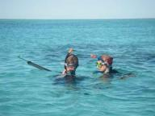
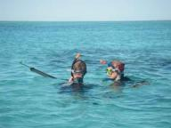
|
|
|
De eerste dagen van Jessie aan boord van Hafskip
» exacte locatie
Vanuit Hamilton Island hebben we een klein stukje kunnen zeilen. Broer en zus stonden op het dek om de zeilen te hijsen. Ilse was onze captain. Na een klein tochtje en een tweede schildpad langs de boot, hebben we het anker uitgegooid bij een van de eilandjes in het Whitsundays gebied. De zon gaat hier, nu het winter is, erg vroeg onder: 18.30u, dus was het ook prima om bijtijds te gaan slapen, helemaal na die trip van 52 uur om hier te komen.
De tweede dag gaf nog geen goede weersvooruitzichten. Oke, het is iedere dag zonnig en warm, maar voor onze missie Brisbane bereiken, is dat niet belangrijk. Ons doel is zo dicht mogelijk, of misschien wel helemaal te eindigen in Brisbane op 10 augustus. Voor vandaag was het wind tegen en stroom tegen, dus zelfs met de motor aan, zijn we niet meer opgeschoten dan 12 mijl.
De derde dag was er weinig wind voorspeld, dus gunstig om te motoren. We kregen 's ochtends vroeg de stroming mee, dus om 6 uur vertrokken. Een mooie zonsopgang scheen ons tegemoet, het beloofde vakantietechnisch gezien een schitterende dag te worden. Anderhalve etmaal hebben we gemotord en ik heb mijn eerste wacht op zee gehouden. Om 22u was het mijn beurt. Ik had geslapen van 19-22 en nam het daarna van Ilse over. Als een echte beginnende kapitein keek ik om de 2 minuten of er niet een andere boot
in zicht was en controleerde ik de koers op de gps. Ik was meer tijd kwijt met het opzoeken van de regel waar ik was in mijn boek, dan dat ik daadwerkelijk aan lezen toekwam. Om 02.30u kwam Joost naar buiten, mijn wacht zat erop, zonder brokken.
De volgende ochtend bleek het weerbericht redelijk positief. Het zou maar zo kunnen dat we ons tweede etmaal voort kunnen zetten met het echte zeebonkenwerk: zeilen zonder motor. Aan het einde van de middag stak de juiste noordwestenwind op. Halverwege de nacht zou deze gaan draaien richting zuid. Als het allemaal mee zou zitten, zouden we daarmee exact op de goede tijd uitkomen bij het Fitzroyreef. De motor ging uit en wat bleek; we gingen niets minder snel! Blijkbaar voeren we al zo hard met de
zeilen, dat de motor ons geen extra knopen bezorgde. De tweede nacht ging in. De wind woei harder, de golven waren hoger en de deining van het schip des te meer. Rollend in de kajuit probeerde ik in slaap te komen. Ik had tenslotte maar 3 uur voordat mijn wacht begon. Ik kon me niet herinneren wanneer ik voor het laatst niet in slaap kon komen, maar vannacht heb ik dat zeker een aantal keer per minuut gedacht. Mijn wacht begon en ik was nog steeds wakker. Al apekooiend trok ik de zeiljas en het reddingsvest
aan, klikte mijzelf vast aan de lifeline en tuurde de nacht in. De schorpioen en de melkweg waren er weer. De wind ging steeds harder te keer. De stroming kregen we mee en de boot rolde over de hoge golven. Ik heb mezelf redelijk wakker kunnen houden met het zetten van kruisjes op de kaart en de wedstrijd die ik speelde met de wind. Kon de boot nog harder dan 6 knopen? Ik voelde hem door het water glijden en over de golven heen. Hafskip trok aan en ik stak mijn hoofd om het hoekje de kajuit binnen,
6.6 knopen. We gaan hard! Ik zette nog maar een kruisje, want ik mocht niet uit het oog verliezen dat we van de kaart af zouden varen. Dan werd het echt tijd om Joost wakker te maken. Nog een klein stukje, de zeilen stonden nog goed voor de wind en golf, een stroom, een lift, Hafskip ging als een speer en verbrak het record van de afgelopen twee etmalen met een snelheid van 7.2 knopen! Halverwege de wacht van Joost draaide zoals voorspeld was de wind. De zeilen konden verzet worden en we voeren recht
op ons doel af: Fitzroyreef. Rond 13.00u zullen we het atol binnen varen op kraakhelder water.
|
|
|
Meerboei avontuur
» exacte locatie
De tijd gaat zo ontzettend snel. Na 16 dagen voelde het nog alsof mijn ouders pas net aan boord waren. En toen was het al weer tijd om te vertrekken! Na het slechte weer in Airlie Beach hebben we vrijdag gelukkig wel een mooie dag op een fraaie ankerplek gekregen om de vakantie zonnig af te sluiten. Zaterdagavond zijn we nog een keer mee uit eten genomen op Hamilton Island en hebben we daarna in de kuip van de boot geborreld, maar zondagmorgen was het dan echt zover. Met ons vieren liepen we naar
het vliegveld en moesten we afscheid nemen. Zo snel als ze gekomen waren in Mackay, zo snel waren ze ook weer weg. Dat is toch echt geen leuk moment. In het dorpje hebben we op een bankje zitten wachten tot het vliegtuig opsteeg en over ons heen vloog. Wereldreizen is fantastisch, maar ver weg zijn van familie is en blijft moeilijk. De dag bleef een beetje sip, maar gelukkig stond voor de dag erna het volgende familielid op het programma: mijn zus Jessie! We hebben de boot aan een meerboei gelegd
vlakbij het vliegveld om het exorbitante havengeld van het luxe Hamilton Island uit te sparen. Helaas ontvingen we de volgende ochtend een smsje "vertraging, aansluiting gemist, kom pas morgen  ". Ze moest uit Bali komen en inclusief deze vertraging kwam de totale reis op maar liefst 52 uur. Gruwelijk. En wat ook teleurstellend was het missen van een heel bijzonder weergat met westenwind. Wel wat hardere wind, maar in de goede richting wat ons in staat stelt heel snel voortgang richting Brisbane
te maken in een gebied waar normaal vrijwel altijd tegenwind staat. Die nacht, nog steeds aan de meerboei, kwam de westenwind. Alleen bleek het meer zuid te zijn geworden waardoor we met onze meerboei zo ongeveer aan lagerwal lagen midden in een snelstromend kanaaltje. En omdat de wind harder dan verwacht rond kracht zeven was, gebeurden er in combinatie met de sterke stroming vreemde dingen. De enorme meerboei met een doorsnede van wel een meter dreunde steeds zo hard tegen de romp dat de hele boot
schudde. Het bijbootje ging als een wilde tekeer op de golven en deed ons besluiten in het donker met zwemvest aan toch te proberen het motortje eraf te halen voor het geval het nog gekker zou worden. En het werd ook gekker. Ergens midden in de nacht hadden de meerboei en het bijbootje het voor elkaar gekregen zich om elkaar heen te draaien en toen de stroming weer eens veranderde kwamen er enorme krachten op de lijn van de bijboot. We werden wakker van weer nieuwe beukgeluiden en toen ik buiten
kwam was ik net op tijd om te zien hoe het bijbootje in zijn geheel over de meerboei heen werd gesleurd, half scheef gaand en net geen water scheppend. De lijn van de bijboot bleek daarbij doorgesneden en alleen de tweede lijn die we uit voorzorg altijd bevestigen voorkwam dat het bootje zo de nacht in was gedreven om waarschijnlijk niet meer terug te worden gevonden. Snel sprong ik het bootje in en bevestigde een nieuwe reservelijn zodat ik de andere lijn en de meerboei kon ontwarren. Eigenlijk
was het bijbootje onhoudbaar omdat het steeds dreigde opnieuw te gaan klieren met de meerboei of omdat het zo hard tegen de boot aansloeg dat het vast niet lang heel zou blijven. Eigenlijk was de enige optie om hem op te takelen en af te rekenen met al dit gedoe. Makkelijker gedacht dan gedaan. We manoevreerden het bootje naar de luwe kant van de boot zodat we niet in al te grote golven bezig waren. Ik knoopte een aantal lijntjes aan de hoekpunten in een punt en bevestigde die aan de spinnakerval
in de mast. Die zat alleen vreemd gedraaid om de zalingen en andere vallen en in het donker was dat niet te ontwarren. We hebben hem toen maar met lompe kracht toch opgetakeld, hopend dat het geheel niet vast zou komen te zitten. Met ons tweeen wisten we het bootje uiteindelijk over de zeereling te sleuren en op het dek te leggen. Goed vastgebonden aan dek en dat gevaar was geweken. De meerboei lag nog steeds tegen de romp te beuken, maar met wat stootwillen hebben we die een beetje kunnen temmen
en konden we eindelijk nog wat slaap pakken. En blij zijn dat we niet dit "perfekte" weergat hadden kunnen pakken, want dat was zeker geen pleziertocht geworden. Om acht uur was het tijd om naar het vliegveld te gaan om Jessie op te halen, maar de condities waren nog steeds zo beroerd dat het bijbootje weer te water laten echt niet verantwoord was. Daarom zijn we maar weer die haven ingegaan. Een kort verblijf was natuurlijk ook mogelijk, kostte slechts 10 euro per uur, yuk. We kwamen net bij het
vliegveld aangelopen toen we haar vliegtuig zagen landen en een kwartiertje later konden we elkaar al begroeten. Alle nachtelijke avonturen waren snel weer vergeten toen we bijpraatten bij een ontbijt met croissants en gekookte eitjes. Ongelofelijk dat ze ons hier komen opzoeken, helemaal hier aan de andere kant van de wereld. Aan het eind van de ochtend ging de wind liggen en konden we uitvaren. De haven wisten we nog af te pingelen van vier naar drie uur korte verblijfskosten. Altijd proberen.
Nog geen tien minuten op het water kwamen tegelijkertijd een schildpad en een walvis boven. De laatste bleef wat langer hangen en sloot zijn vertoning af door die gigantische staart boven water te steken. Een geweldig gezicht. ". Ze moest uit Bali komen en inclusief deze vertraging kwam de totale reis op maar liefst 52 uur. Gruwelijk. En wat ook teleurstellend was het missen van een heel bijzonder weergat met westenwind. Wel wat hardere wind, maar in de goede richting wat ons in staat stelt heel snel voortgang richting Brisbane
te maken in een gebied waar normaal vrijwel altijd tegenwind staat. Die nacht, nog steeds aan de meerboei, kwam de westenwind. Alleen bleek het meer zuid te zijn geworden waardoor we met onze meerboei zo ongeveer aan lagerwal lagen midden in een snelstromend kanaaltje. En omdat de wind harder dan verwacht rond kracht zeven was, gebeurden er in combinatie met de sterke stroming vreemde dingen. De enorme meerboei met een doorsnede van wel een meter dreunde steeds zo hard tegen de romp dat de hele boot
schudde. Het bijbootje ging als een wilde tekeer op de golven en deed ons besluiten in het donker met zwemvest aan toch te proberen het motortje eraf te halen voor het geval het nog gekker zou worden. En het werd ook gekker. Ergens midden in de nacht hadden de meerboei en het bijbootje het voor elkaar gekregen zich om elkaar heen te draaien en toen de stroming weer eens veranderde kwamen er enorme krachten op de lijn van de bijboot. We werden wakker van weer nieuwe beukgeluiden en toen ik buiten
kwam was ik net op tijd om te zien hoe het bijbootje in zijn geheel over de meerboei heen werd gesleurd, half scheef gaand en net geen water scheppend. De lijn van de bijboot bleek daarbij doorgesneden en alleen de tweede lijn die we uit voorzorg altijd bevestigen voorkwam dat het bootje zo de nacht in was gedreven om waarschijnlijk niet meer terug te worden gevonden. Snel sprong ik het bootje in en bevestigde een nieuwe reservelijn zodat ik de andere lijn en de meerboei kon ontwarren. Eigenlijk
was het bijbootje onhoudbaar omdat het steeds dreigde opnieuw te gaan klieren met de meerboei of omdat het zo hard tegen de boot aansloeg dat het vast niet lang heel zou blijven. Eigenlijk was de enige optie om hem op te takelen en af te rekenen met al dit gedoe. Makkelijker gedacht dan gedaan. We manoevreerden het bootje naar de luwe kant van de boot zodat we niet in al te grote golven bezig waren. Ik knoopte een aantal lijntjes aan de hoekpunten in een punt en bevestigde die aan de spinnakerval
in de mast. Die zat alleen vreemd gedraaid om de zalingen en andere vallen en in het donker was dat niet te ontwarren. We hebben hem toen maar met lompe kracht toch opgetakeld, hopend dat het geheel niet vast zou komen te zitten. Met ons tweeen wisten we het bootje uiteindelijk over de zeereling te sleuren en op het dek te leggen. Goed vastgebonden aan dek en dat gevaar was geweken. De meerboei lag nog steeds tegen de romp te beuken, maar met wat stootwillen hebben we die een beetje kunnen temmen
en konden we eindelijk nog wat slaap pakken. En blij zijn dat we niet dit "perfekte" weergat hadden kunnen pakken, want dat was zeker geen pleziertocht geworden. Om acht uur was het tijd om naar het vliegveld te gaan om Jessie op te halen, maar de condities waren nog steeds zo beroerd dat het bijbootje weer te water laten echt niet verantwoord was. Daarom zijn we maar weer die haven ingegaan. Een kort verblijf was natuurlijk ook mogelijk, kostte slechts 10 euro per uur, yuk. We kwamen net bij het
vliegveld aangelopen toen we haar vliegtuig zagen landen en een kwartiertje later konden we elkaar al begroeten. Alle nachtelijke avonturen waren snel weer vergeten toen we bijpraatten bij een ontbijt met croissants en gekookte eitjes. Ongelofelijk dat ze ons hier komen opzoeken, helemaal hier aan de andere kant van de wereld. Aan het eind van de ochtend ging de wind liggen en konden we uitvaren. De haven wisten we nog af te pingelen van vier naar drie uur korte verblijfskosten. Altijd proberen.
Nog geen tien minuten op het water kwamen tegelijkertijd een schildpad en een walvis boven. De laatste bleef wat langer hangen en sloot zijn vertoning af door die gigantische staart boven water te steken. Een geweldig gezicht.
|
|
|
Ongewoon weer
» exacte locatie
De gouden snorkelplaats (zo worden ze genoemd in de pilot) lag in een baai. Je kon er gedurende twee uur aan een mooring gaan liggen i.p.v. te ankeren. De mooringen waren bezet en bij nader inzien wilden we toch liever ankeren, omdat we hier ook de nacht gingen doorbrengen. Ankeren kan als nadeel hebben dat je het koraal beschadigt, maar ankeren was hier wel toegestaan mits buiten de boeien. De aangegeven snorkelplaats was inderdaad een gouden, met een prachtige koraalwereld. Jammer was dat de zon
die middag niet constant scheen. s Avonds zwommen er scholen vliegende vissen rond onze boot en genoten we weer van een prachtige zonsondergang. Het sterrenbeeld schorpioen is hier duidelijk aan de hemel te zien. Bij het binnenhalen van het weerbericht voorspelde weergoeroe Bob de komende dagen steeds harder wordende wind oplopend woensdag tot 9 bft. Om die reden zijn we richting Airlie Beach gezeild en hebben daar een ligplaats in de marina besproken. Dit was meteen een goed moment om ons proviand
aan te vullen. De haven lag beschut, was ruim opgezet met lange en brede steigers en goede voorzieningen. Het stadje was erg toeristisch en afgestemd op backpackers. In de supermarkt was dan ook weinig van onze gading te krijgen. Er was een ruime sortering van verpakte, belegde broodjes, maar weinig vers fruit, groente, vis en vlees. Inmiddels ging het regenen en begonnen onze magen te knorren. Dus snel naar binnen bij de eerste gelegenheid die zich voordeed. Binnen zag het er heel apart uit. Het
was een grote vierkante betegelde ruimte met een stoffen overkapping. Een teken dat het hier s zomers erg warm moet zijn. In het midden stonden lange tafels met banken en rondom zitjes voor vier personen. Vier mega-televisies waren aan de vier zijden opgehangen. Op twee ervan was een voetbalwedstrijd te volgen en op de andere twee een rugbywedstrijd. Veel bezoekers volgden een van de wedstrijden. Op de kaart stond een lunchhapje genaamd "wedges". Dat leek Joost, Ilse en Frans wel wat. Zelf koos
ik voor een salade. De wedges waren gefrituurde wigvormig gesneden aardappels. Lekker, maar een gigantische hoeveelheid. De drie porties die besteld waren, kwamen met moeite op. Daarna met de bus naar een nabijgelegen, echte supermarkt en gezien de hoeveelheid ingeslagen boodschappen met de taxi terug. Laat de storm maar komen! De weersvoorspelling kwam uit: harde wind en veel regen. Volgens mensen uit deze streek was dit heel ongewoon dus bijzonder voor ons om dit te mogen meemaken! Extra tijd om
wat meer te lezen. Toevallig had ik een boek bij me dat ging over de ontdekking van Australie door James Cook in de 18e eeuw. Deze verkende met zijn houten zeilschip de oostkust van Australie van zuid naar noord. Hij stond erom bekend gedetailleerd kustlijnen te kunnen weergeven. De problemen kwamen toen hij zich in het gebied begaf waar wij ons nu ook bevinden: het Great Barrier Rif. Daar al zeilende liep hij op een rif vast en maakte veel water. Uiteindelijk kwamen hij en zijn bemanning los en
bereikten al hozend het vaste land. Daar werd bij eb de schade vastgesteld. Een groot gat was in de boot geslagen. Maar een geluk bij een ongeluk: dat gat was voor een groot deel opgevuld door een afgebroken stuk koraal waar ze op gevaren waren. Nu is dit gebiedgelukkig wel helemaal in kaart gebracht! Omdat we ook iets van het binnenland wilden zien, zijn we met de bus naar het Conway Range National Park gereden om een wandeling naar Swamp Bay te maken. De wandeling startte bij een poel, waar krokodillen
zich zouden ophouden. In Australie komen in rivieren en moerasachtige gebieden krokodillen voor. We meenden er een paar te zien, maar erg duidelijk was het niet. In het gebied waar we doorwandelden vertoefden vroeger de aboriginals in de zomer om verkoeling tegen de hitte te zoeken. Met name de vrouwen verzamelden allerlei vruchten en zaden. De zaden van de cycad-boom waren erg geliefd. Ze waren weliswaar giftig, maar op een speciale manier bereid erg voedzaam, zoals op het info-bord stond. Prachtige
grasbomen stonden er en stukjes mangrovebos kwamen we tegen. Een heel geslaagde wandeling en nu weer tijd om verder te zeilen vonden we allemaal. En niet te vergeten om vis te vangen voor op de bbq. Nog steeds ligt er aas (inktvis) in de koelkast. Inmiddels heeft Ilse een prachtige buik gekregen. Ze voelt zich prima en de baby laat zich al regelmatig voelen.
|
|
|
Whitehaven Beach
» exacte locatie
op dit moment is het hier zaterdag en zijn we met zn vieren een week in het gebied van de Whitsundays aan het zeilen. Aan gespreksstof nog steeds geen gebrek!
Het is een prachtig natuurgebied. Je zou het kunnen vergelijken met een berglandschap in Oostenrijk, waarvan je het bovenste gedeelte ziet, verzonken in een azuurblauwe zee. Veel mooie baaitjes met mogelijkheid tot ankeren. Elke avond zoeken we een geschikte plaats uit met zo min mogelijk deining. s Morgens gaat de zon op om zes uur en s avonds onder rond zessen. Apart is het te ervaren dat rond twaalf uur s middags de zon in het noorden staat. Iets wat voor Joost en Ilse al heel gewoon is. s
Nachts bij heldere hemel zie je het zuiderkruis. Waar we ons na een week hier verblijven keer op keer weer over verbazen is dat het watersporttoerisme hier minimaal is. Zeker de eerste dagen kwam je hier zelden een andere boot tegen, hooguit dat je zo nu en dan een mast in de verte aan de horizon zag. We vroegen ons af hoe het mogelijk was dat zo weinig mensen deze bijzondere plaatsen opzoeken. Het enige dat we konden bedenken was dat Australie veel minder dicht bevolkt is dan Nederland.
Na het geslaagde uit eten op Hamilton Island, de eerste haven die we aandeden, hebben we de volgende morgen boodschappen gedaan, een was gedraaid en de boot met water en electriciteit aangevuld. Daarna vonden we het tijd om weer te vertrekken. Na drie uur zeilen kwamen we aan bij Whitehaven Beach. Een grote baai aan een bijna wit strand met zowaar een paar andere boten. Met de dinghy naar de kant gevaren om een heerlijke strandwandeling te maken en daarna een verfrissende duik. Joost en Ilse gingen
met de dinghy terug en Frans en ik zijn terug naar Hafskip gezwommen. Inmiddels was de zonnetent boven de kuip gemaakt, want zeker rond het middaguur moet je hier de zon mijden vanwege het gat in de ozonlaag. Om deze reden is de zonnebrand met hoge beschermingsfactor hier naar verhouding ook goedkoop.
Vanavond bekijken we een volgend deel van de fotoreportage van de wereldreis. We zijn tot de Galapagoseilanden gekomen.
Morgen staan we op tijd op om naar een van de mooiste snorkelplaatsen van de Whitsundays te zeilen.
|
|
|
Het Zuidland
» exacte locatie
Het is anderhalf jaar geleden dat we Joost en Ilse hebben gezien in levende lijve. Het ging niet makkelijk. Na vele uren vliegen en poortjes door (zes keer), landden we uiteindelijk in Mackay, Australie. Onbegrijpelijk voor een vijftigplusser, maar toch waar stonden Joost en Ilse ons op te wachten bij aankomst op het vliegveld. Aan de andere kant van de wereld en precies op tijd, geen probleem. Aan boord was alles ingericht voor ons verblijf. Onze vakantie kon beginnen. Wat opvalt is dat het land
erg leeg is. We zeilden in het prachtigste natuurgebied en we zagen per dag maar een of twee bootjes. We zeilden tussen de kust en talloze eilanden door (Hillsborough channel) richting Whitsunday Islands. Alle eilanden zijn onbewoond en maken onderdeel uit van een natuurpark aan de westkant van het Great Barrier Reef. We zagen dolfijnen en we kregen twee keer per dag bezoek van Henry, een grote waterschildpad. Het is indrukwekkend en uitermate geschikt om tot rust te komen. Helaas hebben we een dag
regen gehad, altijd goed voor een paar extra bladzijden leesvoer. Hamilton Island is wel ontwikkeld. Boten en vliegtuigen gaan af en aan om toeristen te halen en te brengen. Er rijden geen autos, maar golfkarretjes rond, die je kan huren. Gisterenavond ontzettend lekker vis gegeten (from the market) in het restaurant. Bijgaand een foto hoe het er uit ziet op het water. Straks gaan we snorkelen en vanavond eten we vis die Joost gaat vangen. Het is nog niet gelukt een vis te vangen sinds we er zijn,
maar we geven de moed niet op. Ilse praat veel over de baby, zij is letterlijk vol van verwachting. En het is duidelijk te zien ook! Met Joost kan ik over andere dingen praten zoals het opknappen van de boot, lassen en roestbehandeling. Het weer is vandaag prachtig: zonnig 25 graden, een enkel schapewolkje.
Wordt vervolgd.
|
reageer!
Frans en Corry, 19/7/2008, 15:54
|
Opa en oma op bezoek
» exacte locatie
Afgelopen vrijdag hebben we de 20-weken-echo gehad voor de baby. Eigenlijk ben ik al 22 weken zwanger maar in Nieuw-Caledonie kwamen we er pas achter dat die echo toch wel belangrijk is maar kregen we 'm niet meer geregeld. 's Ochtends om acht uur waren we aan de beurt maar er reden nog geen bussen dus zijn we de 5 km. gaan lopen. Daar aangekomen bleken ze de Nieuw-Caledonische doorverwijzing niet te accepteren. Dus eerst naar een Australische verloskundige voor het goede papiertje, weer terug en
gelukkig hadden ze een paar uur later weer tijd voor ons. De echo bleek een uur te duren en echt alles werd ingezoomd en opgemeten. Gelukkig was alles goed. Het was erg mooi ons kindje weer te kunnen zien, die kleine handjes die de hele tijd open en dicht gaan! Al met al werd het nog haasten om op tijd op het vliegveld te zijn om de ouders van Joost op te halen. Maar ook dat is gelukt. Heerlijk om Corry en Frans na meer dan een jaar weer te zien en in onze armen te kunnen sluiten. Vandaag zijn we
met de boot de Pioneer River afgevaren en hebben we de zandbank weer overgestoken. Dat vond ik wel even spannend, want het hoog water was minder hoog dan toen we de rivier op gingen. Er stond een rustig windje waarmee we naar Brampton Island zijn gezeild, twintig mijl richting het noorden, op naar de Whitsunday Islands.
|
|
|
Pioneer rivier
» exacte locatie
Dat ankeren in de Pioneer rivier gaat gelukkig goed. Het is maar krap aan en soms worden we bij laag water door de wind tegen ondiepere gedeeltes aangeblazen en zitten we met de kiel tegen de grond, maar scheef zijn we nog niet gegaan. Onze plek is achter de visafslag van Mackay. Niet het fraaiste plekje, maar wel erg beschut. We hebben het hier wel even naar ons zin. Deze week hebben we weinig meer gedaan dan door het stadje wandelen en wat kleine, vrijblijvende, bootklusjes. Ik ben ook nog even
bij Fishing World geweest, een enorme viswinkel. Met Chris hadden we gemerkt dat ons standaard aas, de nepinktvis, hier eigenlijk niet succesvol is. Nu heb ik dus glimmende lepels voor achter de boot en dat zou het helemaal moeten gaan worden in dit gebied. Ik ben benieuwd of we mijn ouders verse makreel kunnen voorschotelen of dat het toch tonijn uit blik wordt. Morgen komen ze aan op het vliegveld van Mackay. Fantastisch vooruitzicht om ze na meer dan een jaar weer te zien.
|
|
|
Sunshine State
» exacte locatie
Het was ons opgevallen dat de laatste drie dagen van de oversteek er zoveel blauwe lucht was met weinig wolken. Echt goed zomerweer zeg maar. In Nieuw-Zeeland was daar maar af en toe sprake van en ook in Nieuw Caledonie waren er toch regelmatig hele partijen wolken. We zijn nu al weer drie dagen aan land en de lucht blijft eigenlijk zo mooi blauw. Ook hebben de nummerborden van de auto's hier allemaal het onderschrift "Queensland Sunshine State". Dat is vast niet voor niets. Ik vroeg een Australier
bij de bushalte voorzichtig of dit weer normaal is en hij reageerde met "huh? ja, natuurlijk!". We hadden ons nog niet met het klimaat bezig gehouden hier, maar dit is wel een leuke bonus. Eigenlijk ben ik over alles in Australie erg enthousiast: het stadje Mackay is een stuk leuker dan het gemiddelde stadje in Nieuw Zeeland, je kunt er goede kebab krijgen, de supermarkt is goedkoop en heeft veel vlees, alles en iedereen ziet er zonnig en vrolijk uit, de mensen zijn erg vriendelijk, over dit zeilgebied
is iedereen hier lovend niet alleen toeristen, ik hoor alleen maar dat werk vinden in Brisbane geen probleem is (dat is waarschijnlijk het plan vanaf september want anders komen we financieel niet meer thuis) en onze beide werkvisa en de verblijfsvergunning voor de boot zijn zonder problemen toegewezen voor de periode van een jaar. Helemaal goed dus. We zijn weer met ons tweeen trouwens, want Chris is, na een bbq met kangaroe gisteravond, vanochtend vroeg vertrokken met het vliegtuig naar Sydney
voor nog een paar dagen rondkijken en dan terug naar Nederland. Het was erg gezellig en we vinden het leuk dat we iemand hebben kunnen laten ervaren wat oceaanzeilen is. De afgelopen twee dagen lagen we in een supermoderne haven. Heel makkelijk voor de was, douche, water en stroom, maar ook erg saai, duur en niet op loopafstand van het centrum. Daarom zijn we vandaag verplaatst naar een ankerplek op de rivier, vlak bij het centrum. Dat was wel spannend want de monding van de rivier zou op sommige
plaatsen erg ondiep zijn en de exacte route was vaag. We hebben zo'n vier lokale mensen advies gevraagd en met die informatie zijn we vlak voor hoogwater vertrokken om zoveel mogelijk water onder de kiel te hebben. Eenmaal in die monding bleek het toch makkelijk fout te kunnen gaan, want we hadden ineens zo'n 30 meter aan stuurboord allemaal brekertjes omdat daar een ondiepte lag. Maar we zijn ongeschonden binnengekomen. Toen kwam het tweede obstakel: een goede ankerplek zoeken die niet helemaal
droogvalt met eb. We hebben overal rondgezocht maar eigenlijk was het nergens echt goed. Vooral niet omdat het nu springtij is en het water maximaal zakt. Toch maar het anker uitgegooid met de wetenschap dat het de volgende dagen minder laag water wordt. Maar voor vanmiddag is het wel een beetje spannend. Misschien gaat het goed, maar misschien gaan we ook wel weer 45 graden scheef net als ooit in het begin van onze reis in Frankrijk.
|
|
|
Hulde aan de windvaan
» exacte locatie
Het tochtje over de oceaan is in het begin al lastig genoeg door alle golven en de opspelende misselijkheid, maar tijdens nachtwachten is het ook niet erg leuk om continu de boot een richting te moeten sturen die wordt aangegeven door het kompas en/of GPS. Sterker nog, overdag heb ik zelfs wel wat beters te doen dan de helmstok de goede richting uit duwen. Gelukkig zijn er twee hulpmiddelen om deze taak uit handen te nemen: de stuurautomaat en de windvaan. De stuurautomaat is een elektrisch apparaatje
dat een bepaalde koers aanhoudt. Helaas kan deze niet tegen water, golven worden niet altijd even goed meegenomen in de berekening, en tijdens het zeilen kan de wind draaien. Hierdoor kan het voorkomen dat de zeilen volkomen verkeerd staan en de boot onnodig scheef wordt getrokken. Bij squalls, kleine stormpjes op zee, is dit erg link. Gelukkig is er de windvaan (hulpmiddel twee)! Dit mechanische apparaat kan de boot altijd een bepaalde koers ten opzichte van de wind laten varen. En dit doet de windvaan
helemaal zonder electriciteit. Je wordt echter wel heel lui van zon windvaan. Als de wind draait, stel je de windvaan iets anders af. Eigenlijk moeten de zeilen dan ook verzet worden, maar daar heb je uiteindelijk ook steeds minder zin in. Een reis maken van een aantal dagen op groot water is wezenlijk anders dan een dagtochtje heb ik gemerkt. De snelheid van het schip en (daarmee samenhangend) de stand van de zeilen is duidelijk ondergeschikt aan het comfort en de veiligheid op de boot. Vooraf
leek me dat helemaal niks, maar na 2-3 dagen zeeziekte wordt dit beeld toch grondig gewijzigd. Dus darvoor hulde aan de windvaan. We zijn inmiddels aangekomen in Mackay, zijn door de customs en quarantaine heengekomen (voor maar liefst $240,- AUS, nieuw recordbedrag) en hebben gisteravond heerlijk gegeten bij een steakhouse. Dat was wel nodig: ik ben in de vier weken die ik bij Joost en Ilse op de boot heb doorgebracht om en nabij 8 kilo afgevallen. Dus voor iedereen die op zoek is naar een goed
dieet: maak een oceaanoversteek. Ik ga zelf morgen met het vliegtuig naar Sydney, om nog een weekje de backpacker uit te hangen. Joost en Ilse maken zich ondertussen op voor de komst van de ouders van mij en Joost.
|
|
|
Land in zicht
» exacte locatie
Echt een grote verrassing is het natuurlijk niet, met een GPS. Maar vandaag hebben we dan toch eindelijk voor het eerst weer land gezien. Een eilandje voor de kust van Australie, Peak Island, en een stukje van een schiereiland waren vandaag plotseling te zien. Maar er waren meer tekenen van land vandaag. Zo waren een soort van vliegende pinguins uitermate geinteresseerd in het aas van de vislijn (waar we overigens niks meer mee hebben gevangen helaas). Ook kwam er een vliegtuig heeeeeel erg laag
over ons heen vliegen. Via de marifoon werden we opgeroepen door een vrouw met een stem zo weggelopen van een of ander commandocentrum (heel monotoom), om uitleg te geven waar we naar toe gingen en hoe de boot heet. De verwachte aankomst in Mackay is morgenavond. Dan komt er eerst een inspectie van de boot, en worden alle verse etenswaren ingenomen. Dit om verspreiding van ongewenste beestjes en plantjes te voorkomen. Ook alle souvenirs en schelpjes worden aan een inspectie onderworpen. Het is, zolang
we nog in quarantaine zijn (aangegeven met een geel vlaggetje in het zijwand), ten strengste verboden om aan land te gaan, eilandjes te bezoeken, of om zelfs maar fysiek contact te hebben met Australie. Dus dankzij al deze strenge regels moeten de biefstukken en douches mogelijk nog een dagje wachten.
|
|
|

|

|
|
|